Week 1 (The Final Countdown)
So the new academic year is upon us and with this a new design diary. Over the coming weeks I will be using this corner of the web to convey my ideas, research, prototyping, experimentation, anything really that falls under the umbrella of design. I thought I'd start by giving a short insight into my background that has lead to me arriving in Final Year IMD as unlike the majority of people in this year I have not followed the traditional path of fellow IMDer's.
After leaving school I immediately jumped into a business related degree, I quickly realised that this was the wrong career path for myself and that reflection was needed to find a degree that would lead to an enjoyable career. So I left my further education into business behind after a year and decided to pursue a career in Multimedia. I decided to enrol in the Creative Multimedia Degree at Queens University Belfast where I achieved a degree and undertook placement positions at local design studios Life Forms Design and Mette Creates (formerly Santos & Santos). On completion of this degree and with my mind set on a design related career path I pitched up at Year 2 IMD, with the aim of completing the second year study before moving on to final year. I was anxious about this next step in education as I thought jumping to second year in a course and then taking a second leap into the final year would be quite an undertaking. However I gained confidence throughout last year as i honed my skills and was delighted with averaging a first in my second year marks which gave me added confidence that I could have a successful final year of study with a classification to be proud of. During the summer break just past I created my first start up project in the form of Focal Football, a website aimed a providing news, rumours and opinions on football. That bring us up to, well right now, with me sitting writing this blog post for Week 1, so onwards and upwards I guess and heres to hopefully a successful and enjoyable year!
The Lecture
Our first lecture of DES511 consisted of an introduction to the module delivered to us by Christopher and Nicklas. We went over the module specification, got introduced to the teaching staff, discussed plagiarism, looked into some accurate citation skills and got shown some module exemplars from previous students. Finally we were given a homework to complete, which can be seen in the content below.
Biography
Paul undertook placement at Life Forms Design and Santos & Santos whilst obtaining his degree in Creative Multimedia from Queens before joining Year 2 IMD. Encouraged by his marks from last year, a first doesn't seem like a pipe dream anymore. Personal project focalfootball.com was created during his summer break.
Major Project Proposals
Fitness Northern Ireland
My idea for this proposal is to have a website which allows users to find various ways of keeping fit in Northern Ireland based on there interests and location. Users would be able to search for classes/teams which are available based on a location which would bring up a list of choices with information on how to get fit in their local area. For instance a user sitting on their laptop in Lisburn may search for 'Horse Riding', which would then bring up classes/teams etc in their surrounding area to do with Horse Riding. The website could also have a section for top rated classes/teams in a given month/week and review section for different classes/team events undertaken.
Pros
- Would allow me to experiment with a variety of different concepts such as databases, google maps and comment sections
- Has the potential to become more than a simple 'Search and Find' site over time, new features could be added such as video content, forums etc
- In my opinion it would be a service which solves a problem which is not being addressed enough; getting people more into sports. Also a perfect time to launch such a project after the success of the London Olympics
Cons
- There are other sites which perform this service, not the exact same service but close enough to draw similarities. So possibly not innovative enough, but then again its hard to find something which hasn't already be done on the internet today.
- PHP would not be my strongest area, so the creation of databases may be a problem area if it was to become extremely advanced. But then again, the skies the limit and all that.
- May be difficult trying to acquire all the information on different exercise oppurtunites in Northern Ireland considering the amount of gyms/teams etc in Northern Ireland would be quite significant.
Overhaul/Revamp Of Personal Project - Focal Football
My idea for this proposal would be too completely revamp and perform a major overhaul to my existing personal project Focal Football. Focal Football currently provides news, rumours and opinions on football from a variety of leagues ranging from domestic to international competitions. My idea for this proposal would be to reconstruct this project in order to appeal to a niche market instead of its current target audience of football lovers. My reason behind this is that football websites are a very very saturated market on the internet today so it is hard to gain a foothold in order to obtain any success. Through finding a niche market to appeal to and by overhauling the brand I would be able to create a new source of football content which is different to anything else on the web today incorporating new features on the website which can't be found on other football related sites.
Pros
- Im very familiar with the subject area, which gives me an advantage from the offset in what content and features would be beneficial to the project
- Would allow me to get to the grips with such concepts as Wordpress/DBMS, forums, online shops etc.
- Is a topic I am very passionate about so would be a project that I would probably favour more due to the personal connection. May lead to me going the extra mile. But then I would be going the extra mile regardless since its my Final Year.
Cons
- Football websites are a saturated area on the Internet today, could prove difficult to achieve a website which signifcantly stands out from the rest.
- Since its an existing personal project I may be somewhat reluctant to change various aspects of the project for University due to my personal connection with it. Maybe its better left as a side project which gives me a different outlet to express myself.
- Could become quite a basic idea with quite a limited scope which may prove damaging to my overall module mark.
New Website Wall
This idea stems from my experience in trying to get traffic to a newly created website. It can be hard for people without the correct contacts or resources to get their new website/company/organisation any exposure. The Website Wall would provide people with the opportunity to upload a picture of their new website with a link and some information to the 'Website Wall', where it would then be rated by a like/dislike method in order for it to rank higher or lower on the wall. This would allow users to view The Website Wall to find out whats new on the internet and what people are currently enjoying (kind of like Digg/Stumpleupon only instead of for articles and stories this would specifically be for new websites). The Wall could be further broken down into categories such as categories for new websites relating to Business, Education or Sport. A comment section could also be added allowing users to post their opinions on these websites. This would hopefully lead to a place on the web were people are able to promote their new websites at a cost effective level whilst still retaining high levels of exposure for their site.
Pros
- Would allow me to experiment with new concepts and perfect my skills in such areas as databases, API's, forums etc.
- Has the potential to become a successful project if sites such as Digg & Stumpleupon are anything to go by.
- Is a project that has a little bit of everything such as a website which provides information but also allows the user to interact with the website as well. Would be a beneficial project to have accomplished to showcase to future employers due to the various features it would incorporate.
Cons
- PHP isnt my strong suit so working with databases and the interactive user side of things might be a bit of a struggle for me. Considering this would be the main selling point of this project it may be a gamble to go ahead with a project which doesn't play to my strengths. But then an opportunity to learn new things is also something to consider.
- The fact that it will incorporate a lot of different features could lead to the project becoming quite an undertaking which may not realistically be able to be completed in the given timescale.
- Other sites online offer services somewhat similar to this project idea, perhaps not an innovative enough proposal.
Five Inspiring Websites
Vimeo
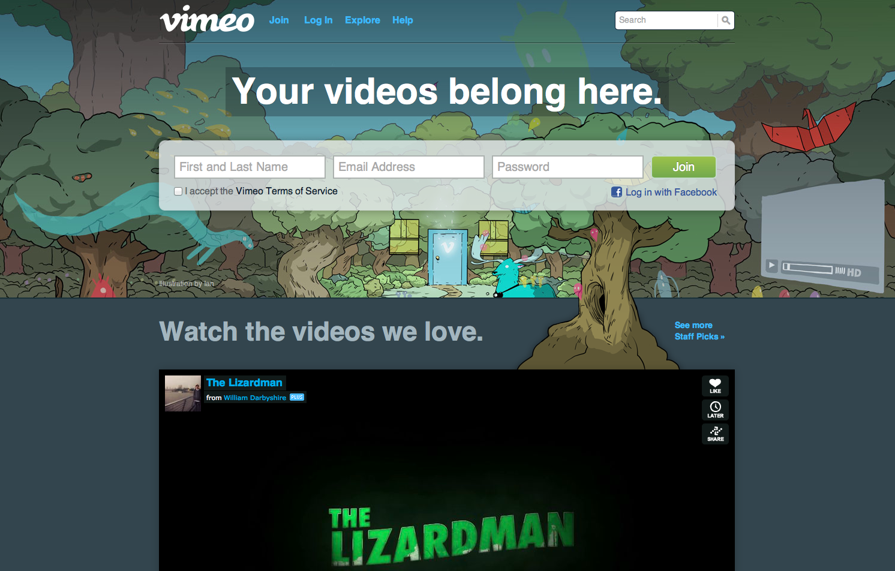 www.vimeo.com
Vimeo is a website which allows users to upload and view video content. Some may argue that Vimeo and Youtube are very similar but I found Vimeo to deliver more artistic video content than Youtube. I find this site inspirational as I frequently find myself on the site looking for ideas either by searching through keywords or categories. Watching the creative videos on this site often gives me added incentive and renewed motivation to carry on with my own creative processes after watching the content people have produced and uploaded to Vimeo. The video schools section of the website is also very useful and informative when trying to get a grasp on new concepts such as photography and videography.
Smashing Magazine
 www.smashingmagazine.com
www.smashingmagazine.com
Smashing Magazine is an online magazine for web designers and developers. The website provides content relating to various aspects of web design as well as providing useful tools and resources related to this area. I find the website inspiring as I often find myself browsing through the different sections and categories, looking at the lastest work and resources that have been posted on the website which fuels my idea process. The fact that the website gets updated regularly means that there is always new sources of inspiration to cast my eye upon and allows me to stay up to date with the latest techniques and concepts which are currently being used in the industry today.
Hypebeast
 www.hypebeast.com
www.hypebeast.com
Hypebeast is a website dedicated to bringing the lastest news and information on fashion and culture. It provides content daily on a variety of different subjects ranging from music and gaming to footwear and interior design. I find this site inspirational as it allows me to get a different take on design from different industries. I think it is important to not become fixated on 'web design' and to only draw inspiration from resources revolved around it. I think being able to appreciate and keep up to date with other types of design can only be benefical in aiding you in your design process in order to create a contemporary and up to date design, Hypebeast helps me achieve this whilst also unearthing some cool finds that could be worth a purchase.
Design Football
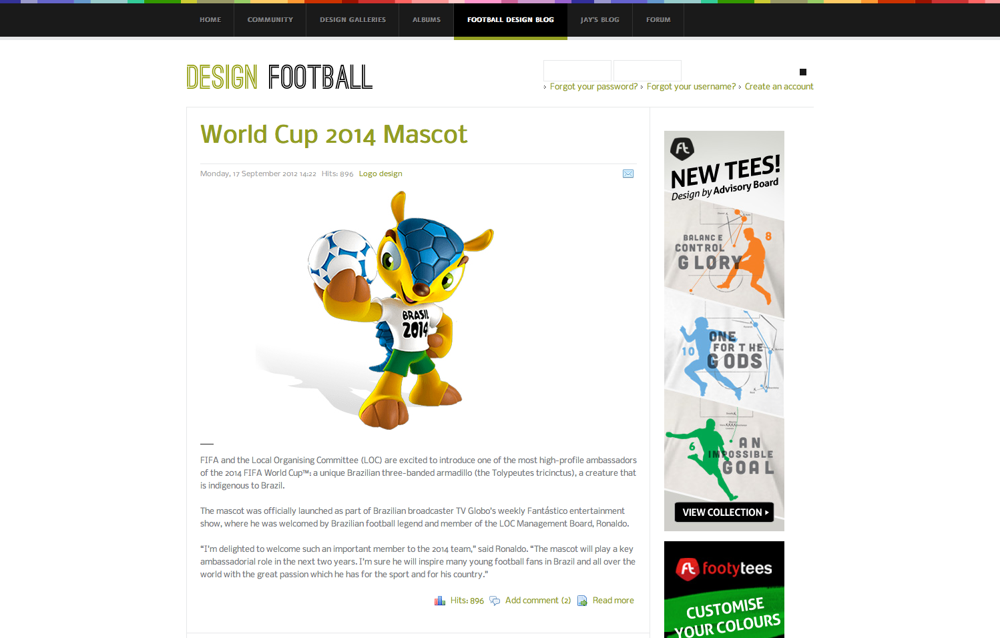 www.designfootball.com
Design football is a site dedicated to showcasing football kit designs. This may seems like an unorthodox choice for an inspiring website but I am very much interested in the blog section of this website as it focuses on design and my other passion, football and brings them together into pleasing and inspiring content. I find it interesting to see how different trends in design have affected the appearance of different elements of football throughout the years, affecting everything from kit designs to team crests. I draw inspiration from this by taking in the various content that is posted on the site which allows me to gain a different perspective on the world of design from an area that I am passionate about. If your into design and football, definitely check it out, there is some truly innovative and inspiring posts in there!
Foundation
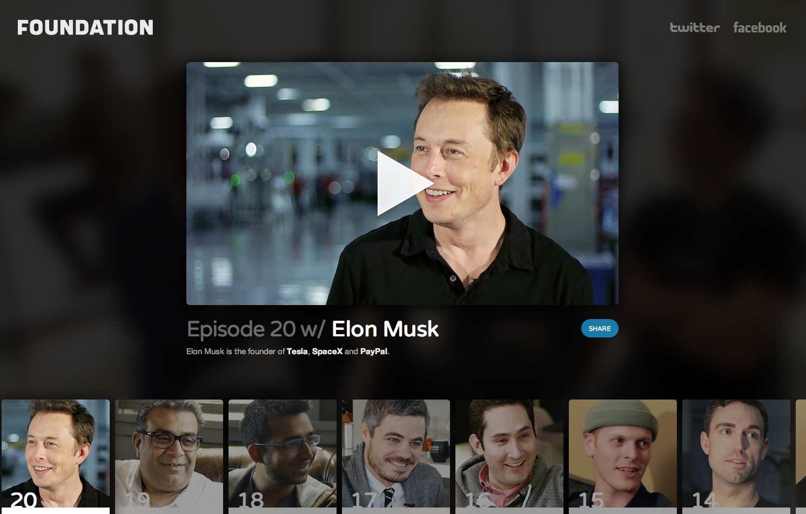 www.foundation.krLast but certainly not least is Foundation. Probably one of my favourite and one of the most inspiring websites I have ever come across. Created by Kevin Rose (founder of Digg and currently working for Google), the site uploads videos of Kevin talking to various entrepreneurs from the world of technology, design and beyond where he talks about their rise to success and lessons they have learnt along the way. The site has had a number of high profile entrepreneurs featured on it such as the founders of Instagram, Paypal and Twitter. I find the website inspiring as it gives me a detailed insight on how to be a successful entrepeneur and how ideas can be formed through different ways of thinking and thought processes. Every time I consume content from this website I always take on board a new way of thinking, a new factor to consider or a new way of approaching things. Foundation is an absolute must for anyone with the ambition to succeed in their chosen profession, can't rate it highly enough.
Other Sites I Find Inspiring
Research
Reading: Responsive Web Design by Ethan Marcotte
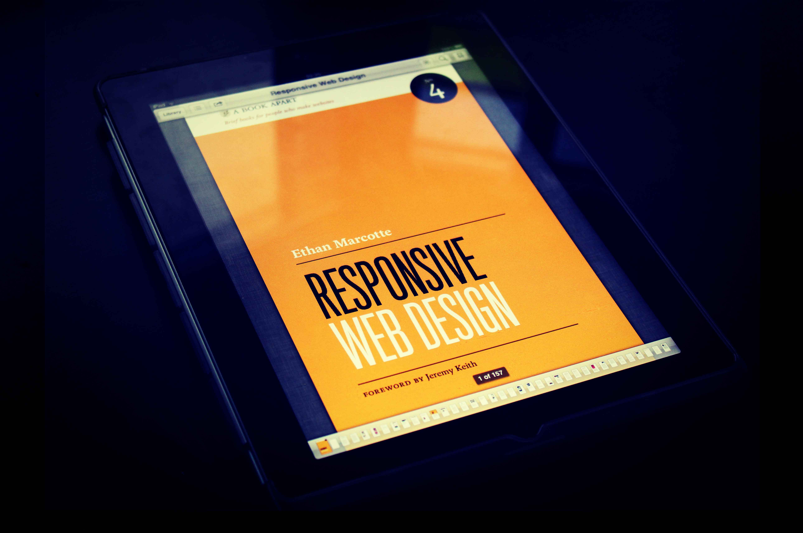
This week as part of my research I decided to take a look at Ethan Marcotte's book on responsive web design. I thought this was a vital book to read at an early stage not only because of responsive design quickly becoming industry standard but also because I wish to make all my designs for the coming year responsive. I feel that this is the correct way to go with so many different devices out their for people to view content on, its only right that you tailor for all of them. I was also keen to get my design diary for 511 up this week and with wanting to make that responsive too reading this book was a must this week.
I found the book an informative read and as it give me insight on the new way to design for the web. The book covered the basics of responsive design and the problems you may face in trying to implement it whilst laying out an approach to take when designing this way. I particularly liked the examples that were given in the book as it allowed you to see the code and work in action instead of just reading line after line of text. Also with the book being a relatively short read in relation to other web design books I found it much easier to get a firm grasp on the topic of the book due to not be overwhelmed with information all at once, page after endless page.
Responsive Resources
After reading Ethan Marcotte's Responsive Web Design book I was interested to see what other resources where out there online to help me make my creations responsive.
One of the first tasks for DES511 was to create our DES511 Diary, this would be our space on the web to upload our DES511 work and creative process. I wanted to make my diary as clean and simple as possible in order for the content to take the primary focus of the viewing however I always wanted it to being visually pleasing. Another element I wanted to incorporate into my diary was making it responsive, it had been pointed out by the lecturers in week 1 that alot of potential employers look through the final years work and diaries, having this in mind I wanted potential employers to gain access to my diary content no matter what device they were on. So I decided to look into some responsive frameworks/boilerplates through which I could build my design upon.
I found a number of useful resources online that I could use as a basis on which to build a responsive website, this would not only help me get up and running with learning the basics of responsive design but would also aid me in improving my knowledge of this area as looking into how the boilerplate is coded can only aid me in the future when I am coding other responsive websites. Some of the more useful responsive resources I researched into can be seen below.
Skeleton
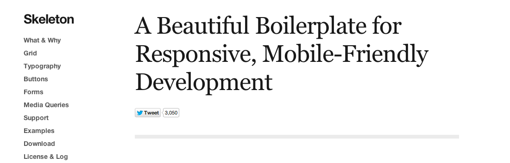
Skeleton is a responsive boilerplate that helps you quickly build websites for any device size. I liked this resource as the CSS files were simple and easy to understand and manipulate to your needs. I also like that the boilerplate was the bare minimum allowing you to design your own website and build it to your requirements without the boilerplate acting as a restriction to what you wanted to create. Skeleton was also great because it worked across a number of different platforms such as Drupal and Wordpress.
Bones Boilerplate
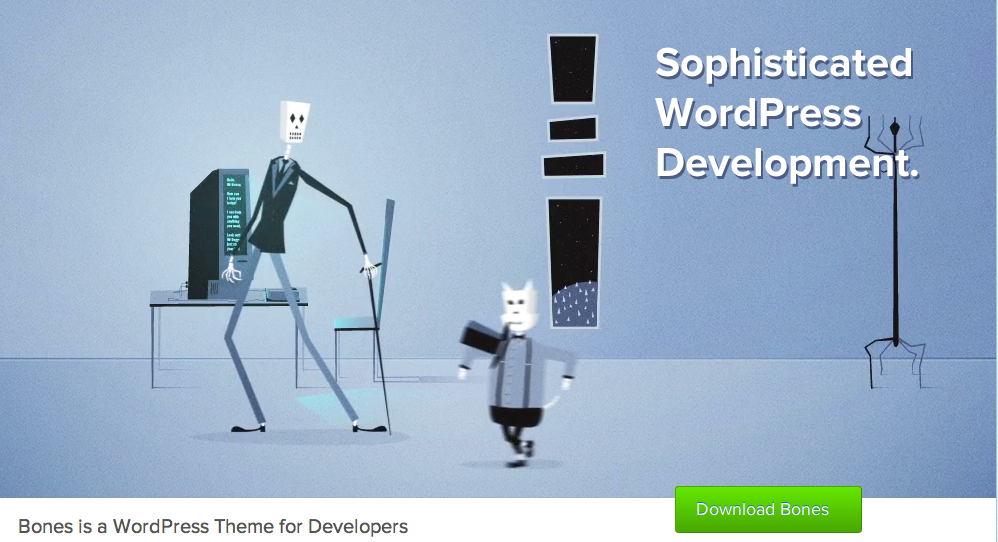
Bones is a Wordpress boilerplate theme allowing responsive, mobile-first development. What I liked about this resource was that it was stripped down to the bare bones (no pun intended) this lead to a minimalistic and easy to understand set of code. Although this resource is designed for use in a Wordpress which somewhat limits its use if Wordpress is not the way you are looking to go, it is still a valuable tool to know about for future projects, perhaps even when it comes round to building my major project website.
320 and Up
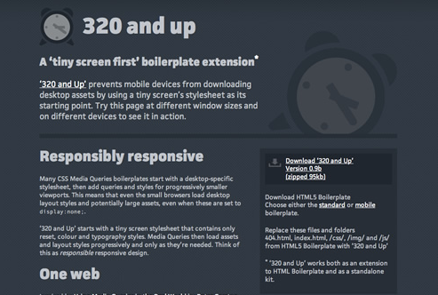
320 and Up is another responsive web design boilerplate created by Andy Clarke. 320 and Up is a useful resource to consider due to its easy to use and lightweight approach meaning getting to grips with its code layout is a seamless task. It comes with all the things you'd expect in a responsive boilerplate; media queries, different style sheets, bootstrap styles for elements such as buttons and is written in the latest web standard of HTML5.
Twitter Bootstrap
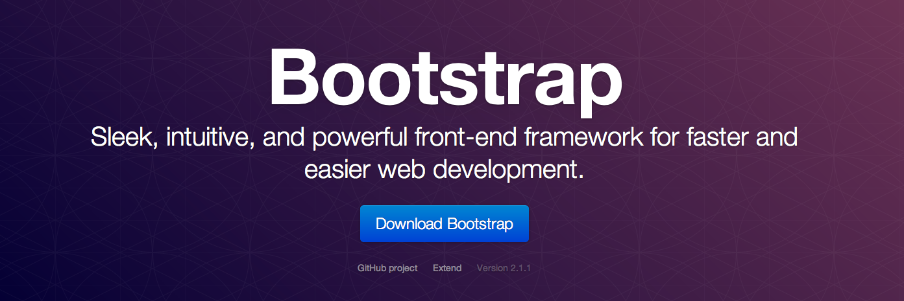
Twitter Bootstrap is a resource I have heard quite a few fellow designers talk about and recommend. I actually implemented twitter bootstrap into a DES Client Project in Year 2, and it worked really well. Twitter bootstrap is a front end toolkit which allows rapid development of web applications. Although the bootstrap isn't responsive by default, responsive features are easily accessed by including the appropriate meta tags and stylesheets.
Creative Experimentation
Building my Design Diary
With DES kicking off for another year it was time again to build a digital diary to showcase all my DES goodness. The easy way around this would be to use my diary from previous years and make some minimal changes but I was sick to death of the sight of it and had improved my skills as a designer since that time. With that in my mind a new digital diary design was most certainly on the agenda.
I wanted my diary for this years work to be clean and minimalistic with the focus being on the content. Due to this the content would have to be presented in a visually pleasing and easy to read fashion. I also wanted my diary to be responsive so that it could be viewed easily across a range of different devices.
I started by drawing up a wireframe of how I wanted my diary to look, check out the wireframe below.

Happy with this design concept I got cracking into coding this design up. During the design I played around with different variations of type and different colour palettes until I reached an outcome which I thought worked well. I ended up going with a predominately black and white theme with accents of blue throughout to give it more character.
I also added a nice bit of CSS in order to highlight my name at the top of the page, this gave a lovely drop shadow effect on my name which I feel not only showcases my skills but adds to the design of the diary.
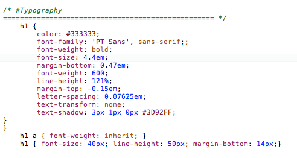
I then experimented with different widths and sizes of the divs in order to perfect the layout of content in my digital diary as well as making the diary responsive.
And so the design of diary was complete, which you are currently on right now. To see how the digital diary is presented on different devices see the images below.
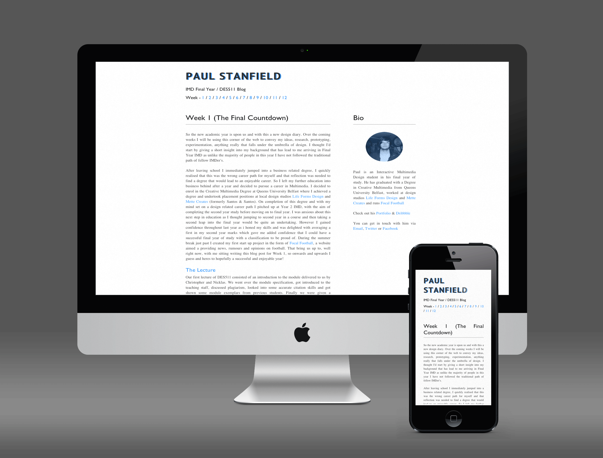References
- A Book Apart, 29/09/2012, A Book Apart, Responsive Web Design [A Book Apart, Welcome], [online]. Available: http://www.abookapart.com/products/responsive-web-design [29/09/2012].
- Dave Gamache, 29/09/2012, Skeleton: Beautiful Boilerplate for Responsive, Mobile-Friendly Development [Skeleton: Beautiful Boilerplate for Responsive, Mobile-Friendly Development], [online]. Available: http://www.getskeleton.com/ [29/09/2012].
- Themble, 29/09/2012, Bones - The HTML5 Wordpress Starter Theme [Elegant HTML5 Design Solutions - Themble], [online]. Available: http://themble.com/bones/ [29/09/2012].
- Andy Clarke, 29/09/2012, 320 and Up 'tiny screen first' responsive web design boilerplate [Fashionably flexible website design by Stuff & Nonsense], [online]. Available: http://stuffandnonsense.co.uk/projects/320andup/ [29/09/2012].
- Twitter, 29/09/2012, Bootstrap [Twitter, Open Source], [online]. Available: http://twitter.github.com/bootstrap/ [29/09/2012].
Week 2 (You Are A Channel)
Possible Idea Taken Further
The homework for this week was to take one of my possible ideas, preferably the one that was the strongest and had the most legs and develop this idea further. To be honest I am still not entirely set on a major project idea as a result of not being entirely happy with my initial three possible projects. However the one I feel at this stage which is the strongest (unless another Major Project comes to mind in the near future) is the Fitness Northern Ireland (working title) idea outlined in Week 1. I will use this idea as my basis for the week 2 homework. You never know I may grow more confident in choosing this idea as a result of looking into how to take it further.
Possible Idea Conveyed in 50 Words
Fitness Northern Ireland (working title) - Website aimed at allowing people to find ways of keeping fit in Northern Ireland (possibly refine this to just Belfast). Users would be able to search for exercise classes/team sports based on their interests and location. Other features could include; top exercise choice of the month, public reviews on various classes/team sports.
Target Audience
The target audience for this idea would be anyone with an interest in trying to keep fit, looking to get fit, wanting to get more active or who is interested in being more social in a exercise related environment. The website would not just be aimed at people who already into sport but for anyone who has an interest in taking up a form of exercise or sport be that in a serious capacity or purely as a form of relaxation and enjoyment. The audience for this website I feel has greatly increased in recent months due to the success and publicity of the London Olympics which has got people more excited about sport and keeping fit. As a result of the wide spectrum of people this could be targeted at the website will need to be tailored to fit people of varying characteristics instead of appealing to a certain type of person.
User Journeys / Requirements
The website will be simple and easy to use, the home page of the site will have the search bar which will perform the main feature and purpose of the website. There will also be pages dedicated to top exercise option of the month and a submit section which will allow people to email the website about new exercise classes/sports teams which are not currently on the website.
Searching For A Class / Sport
The website will allow the user to enter in keywords in order to search for an exercise class/team sport based on their interest and location. For example, a user could enter the words 'Circuit Training' into the search box and then there postcode into the location box which would then bring up a list of possible ways to get involved in Circuit Training in their local area. This search can be tailored according to the users specific interest and location.
Comments / Review Section
On searching for your form of exercise it will bring up a list of options related to your search. Clicking on an option will lead to a page of information, giving short but important details on the option such as name, address, brief description. This section will also have the ability to leave comments on the specific form of exercise class/team sport through using your Facebook account.
Choice Of The Month Feature
The website could also have top exercise option of the month feature, which could be tailored to people who have come to the website looking to get active but aren't entirely sure what form of exercise they are looking to get into. This top exercise option of the month feature could be created by monitoring the option which gets the most views on the website or most favourable comments in a monthly period.
Submit Section
It was highlighted in pitching this idea in Week 1 that gathering information for this project may be quite an undertaking and difficult. One way I thought I could tackle this issue is by have a submit section on the website which would allow people to send in exercise classes/sports teams which are not currently on the website. This could then be reviewed by the project team and then added to the database of the website if deemed appropriate. This would not only help gather information for the website but would also help local excercise classes, sports teams, gyms etc promote their services. Win win.
Possible Technologies Used
- XHTML/CSS - Building the site to make it it standards complaint and contemporary in design.
- PHP/My SQL - Databases will need to be used to store the information on the various classes/sports etc that will be called upon using the search option of the website.
- Google Maps API - Used in order to find the users location, could also be used to find classes/sports as a result of using the information already stored on google maps. This could greatly help with data collection for this project. More research needed into this.
- Facebook Integration - Facebook integration for the comments feature of the website.
- Responsive Design - Designed to work on a number of different devices of different sizes in order to increase the usability of the website.
Research
Reading: Managing One-Self By Peter Drucker
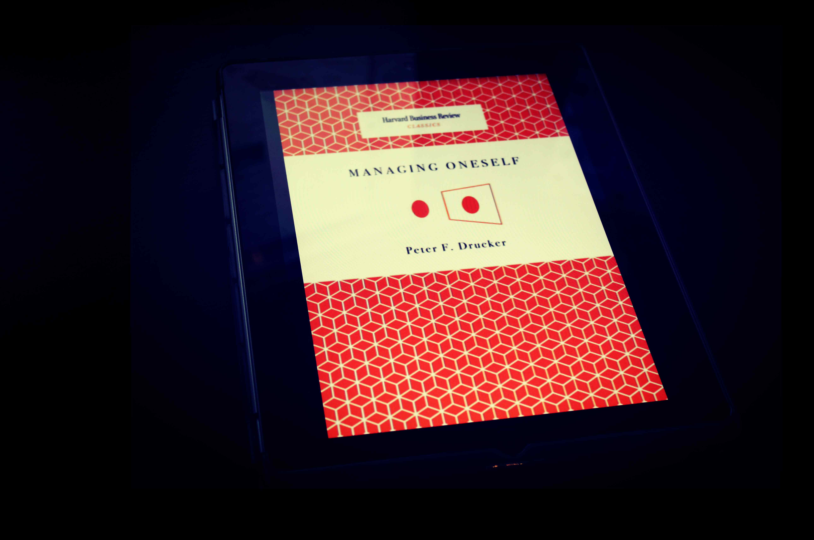
After it being recommended by The Web Standardistas, I decided to pick up Peter Drucker's book on Managing Oneself. The book looks into the things you need to ask yourself in order to take charge of your career looking at things such as your strengths and weaknesses and how to keep yourself engaged and productive in your chosen profession.
I thought this would be a good book to pick up not only due to it coming highly recommended but I also thought the principles covered in the book would serve me well in keeping up a high standard of work for final year and beyond. The book did not disappoint, although a short read I found the book informative and engaging whilst remaining simple and straight to the point. Most valuable thing I took out of this book is how to analysis myself in terms of my strategy towards getting work done by asking key questions such as how I best perform, how I learn and if I work better in a stressful environment or one that is well laid out and structured. All in all an insightful read and one to come back too if I am finding myself out of sorts and lacking direction regarding final year and my design career in general.
Effective Portfolios
Keen to overhaul my existing portfolio which had been live for the last year or so I decided to research into some effective portfolios online. I thought through looking at the portfolios of other designers and businesses that it would help spark my imagination and get the ideas flowing for my own portfolio redesign. I looked through a large amount of portfolios ranging from those for big businesses to graphic designers and photographers. As I browsed the various designs for ones that appealed to me, what became apparent was that I was tending to favour clean and minimal portfolios with a simple yet refined colour palette and set of typography. It was clear from my research that these elements would as a result be adopted in my own portfolio redesign as a result of these being the qualities that appealed to me most. Below are some of the portfolio's I came across; both the good and bad with an explanation of why.
The Good
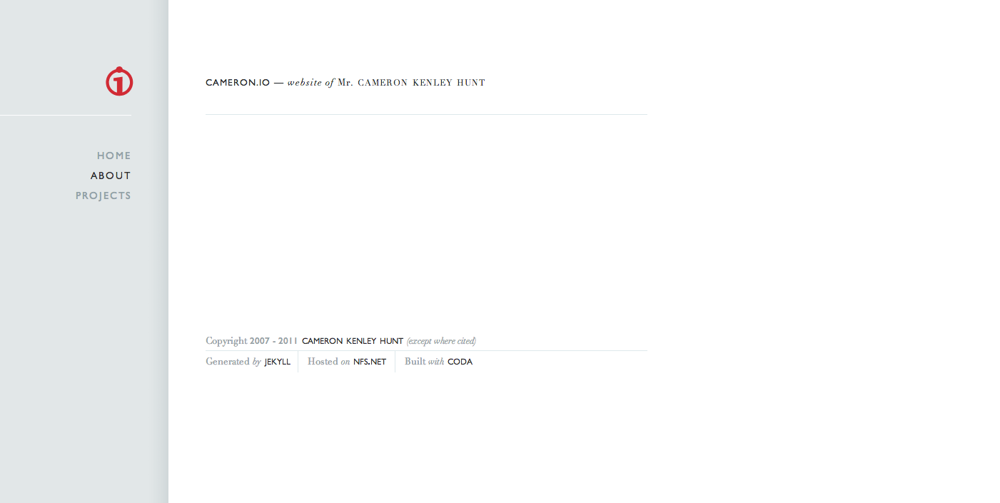
The portfolio of Cameron Kenley Hunt appealed to me because of its simplistic and minimal design, I like the used of the sidebar for the navigation bar which was different to other portfolio websites where the navigation bar usually appears at the top. I also liked the used of minimal colours such as grey and white with the subtle use of red to give character and a sense of presence to the site. My overall view of the design is that less can sometimes be more.
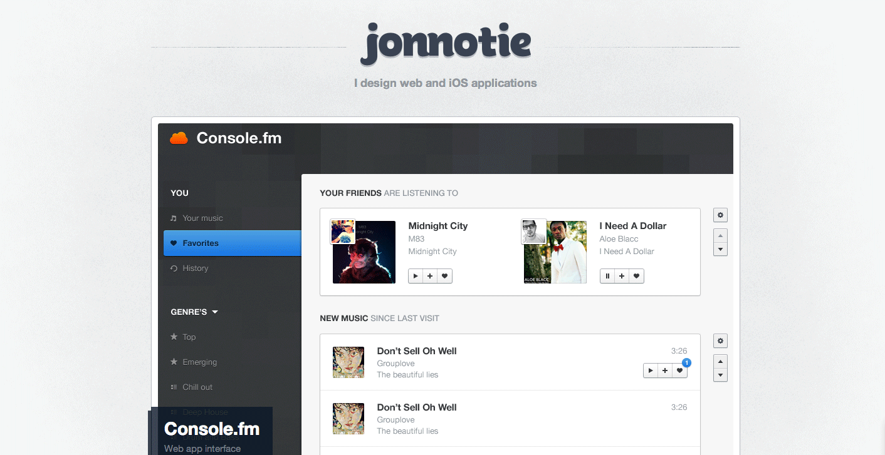The portfolio of Jonnotie once again appealed to me due to its minimal design approach. In particular I really loved the way the portfolio work was displayed on the first page of the website with the use of large, visually pleasing images which automatically gave character to the website. I felt that the way the portfolio work was displayed meant that the fact that the website design itself was quite simple didn't really matter, as the portfolio work was doing most of the work in capturing my engagement.

The portfolio of Nick Robinson was my favourite of the three as I loved the minimal design and grid structure he adopted in order to deliver a portfolio website which was visually pleasing and professional in design whilst still remaining contemporary and relevant to the industry today. I liked the way his portfolio work was displayed on the website with brief explanations of what the work was underneath, which you could then read more about if you clicked on the particular portfolio work.
The Bad

Whilst the design of the website was good from a web design point of view, on a personal level in didn't appeal to me as I felt there was far too much going on with the design, the header in particular with the big bold typography chosen and the use of imagery around the header I felt distracted away from the content of the website and I found myself more interested in that than the work the website was showcasing.
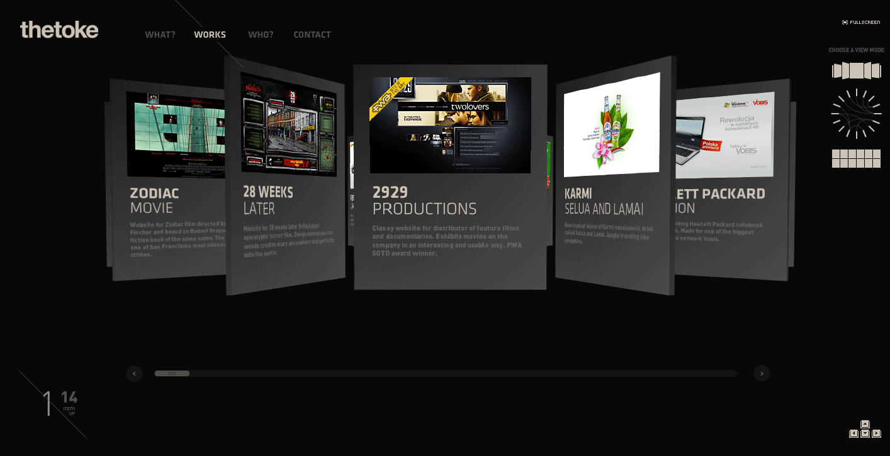Whilst the design of the website was good from a web design point of view, on a personal level in didn't appeal to me as I felt the navigation of the website was too complicated and over designed for use on a portfolio website, the use of the tiles to navigate through portfolio work I felt was a poor use of design and one which may be hard for people to understand and get used to on the website. I feel that a portfolio should have easy navigation to improve user interaction to try keep viewers on your site for longer.
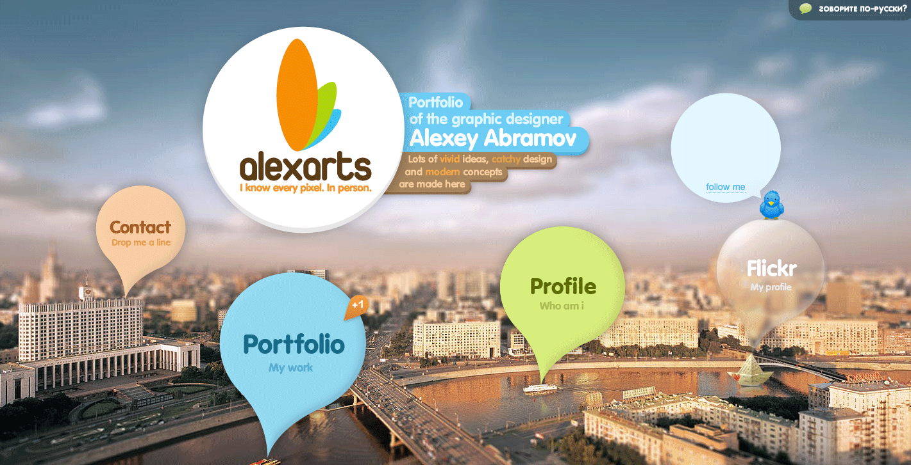Whilst the design of the website was good from a web design point of view, on a personal level in didn't appeal to me as I felt the layout of the website was poor due to the use of the photography being used as part of the navigation of the website, such as a bubble coming out of the boat for the Profile link. This sort of design didnt appeal to me as I felt the content of the website was all over the place, and lead to me having to go search for information instead of it being easily accessible to me.
Creative Experimentation
Paper Prototyping Ideas For Portfolio Website
Whilst I was working on my portfolio redesign I decided to throw up a simple responsve holding page whilst I was working on building my new website. The holding page would have a few links of how to get in touch with me and check out some of work. These would include links to my Twitter, Facebook & Dribble, DES511 Diary as well as my email address, to check out the holding page check out uni.paulstanfield.co.uk/holdingpage.
Alternatively check out the images below of the holding page and how it is displayed responsively across devices.
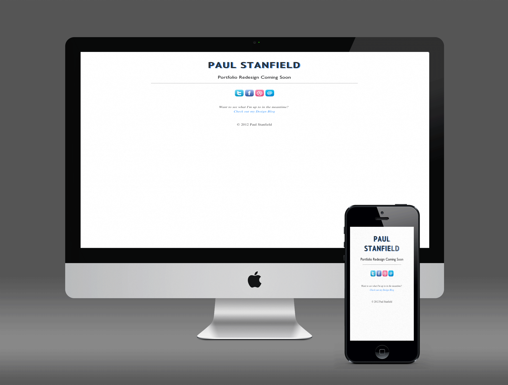With the holding page uploaded and live I got cracking on an idea for my portfolio keeping in mind the direction I wanted to go based on my research into other portfolios. I started paper prototyping ideas in order to see what idea worked and what ideas didnt. Check out the results of my paper prototyping below.
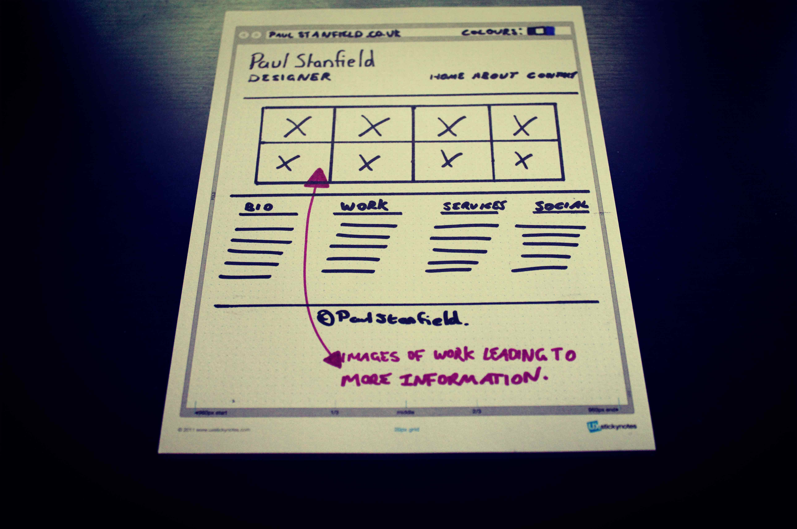Happy with the results of my paper prototyping I got stuck into building the website, I decided due to the nature of my paper prototyping to alter an existing free Wordpress theme as the theme was similar in design to the one I prototyped up. The theme was called the Bunker theme. I decided to use this as a template for my portfolio website as it was close to the idea I had for my portfolio and with a few alternations to its design I could tailor it to my needs to produce an effective personal website.
Due to the fact that the creation of a portfolio for myself not being a deliverable for any of my university modules this year the use of this theme as a template would not be deemed as plagiarism as a result of it not being a university assignment. Also in researching other websites from past IMD'ers I have discovered that this was an approach also adopted by them for their personal portfolio websites during final year. All that being said this can still be used as a form of creative experimentation for this week as a result of the alternations made to the theme and having to learn Wordpress in order to make the creation of this portfolio possible (more about learning/installing Wordpress in the next section).
Alternations I made to the theme, as well as adding in additional features included the following:
- Changed the header
- Took away the dates underneath the posts on the main page and all other pages using a bit of PHP
- Redesigned my blog over at blog.paulstanfield.co.uk so that the design of the blog tied in with the design of my portfolio
- Added a feature to display the latest post from my blog on my portfolio
- Changed the structure of the posts pages in order to display more information on my portfolio work
- Various touches to the design of the site using HTML and CSS
To see the results of this and the completed portfolio check out www.paulstanfield.co.uk
Alternatively check out the image below of the my portfolio website and how it is displayed responsively across devices.
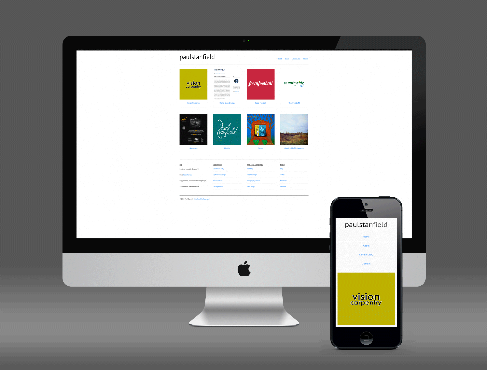
Installing/Learning a bit about Wordpress
As mentioned above I planned to use Wordpress for my portfolio, as a result I decided to run through the installation process on how to install Wordpress for a website. Getting to grips with Wordpress would not only help me with this personal portfolio project but would also stand me in good stead for upcoming DES511 projects that could potentially incorporate Wordpress such as my Major Project or the upcoming Live Project for DES511.
For installing Wordpress I followed the 5-Minute Installation guide on the Wordpress website, this breaks down the installation process down into 6 easy to understand steps to get you up and running in no time, check out it out over at The Famous 5-Minute Install.
This resulted in me having Wordpress successfully installed on my personal domain ready to use and push live when my portfolio was perfected, check out Wordpress installed in all its wonder in the image below
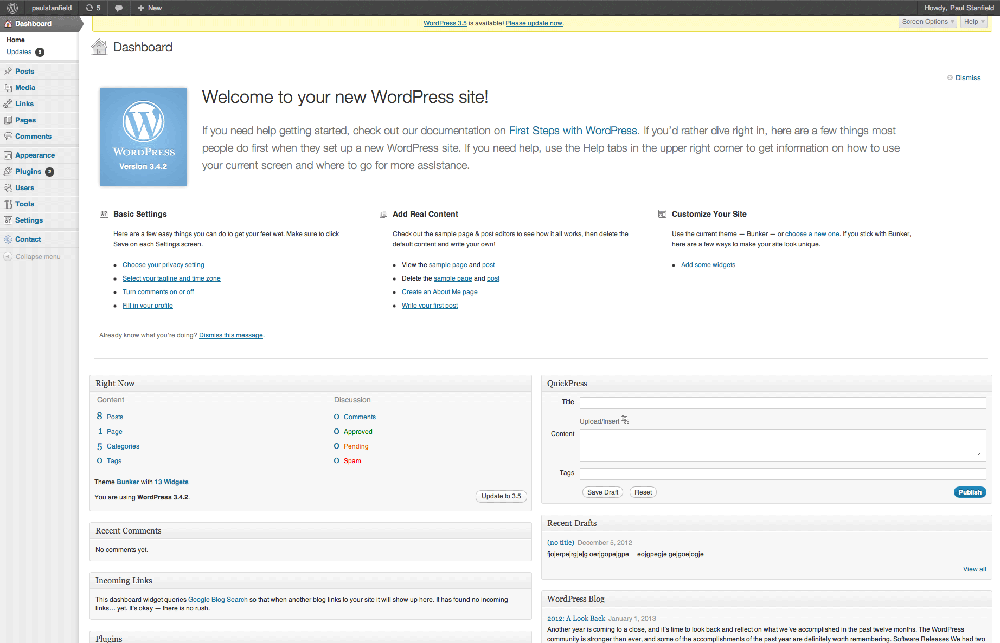With this complete and the theme being added as well to Wordpress to act as a starting point for my portfolio I got stuck into altering the themes code and CSS to tailor to my needs, I then added my desired content via the Wordpress content management system and pushed my new portfolio live. Check it out by clicking the link in the Bio section of this page or by going to www.paulstanfield.co.uk
References
- Peter F. Drucker, 06/10/2012, Managing Oneself - Harvard Business Review [Harvard Business Review Case Studies, Articles, Books, Pamphlets - Harvard Business Review], [online]. Available: http://hbr.org/2005/01/managing-oneself/ar/1 [06/10/2012].
- Alexey Abramov, 06/10/2012, Alexarts Portfolio of the graphic designer Alexey Abramov [online]. Available: http://alexarts.ru/en/index.html [06/10/2012].
- thetoke, 06/10/2012, thetoke interactive / broadcast / Works [thetoke interactive / broadcast], [online]. Available: http://thetoke.com/ [06/10/2012].
- pixelumbrella, 06/10/2012, Seattle Website Design by Pixelumbrella: Online Portfolio of Web Designer and Developer Nick Robinson [Seattle Website Design by Pixelumbrella: Online Portfolio of Web Designer and Developer Nick Robinson], [online]. Available: http://www.pixelumbrella.com/ [06/10/2012].
- jonnotie, 06/10/2012, Jonnotie [Jonnotie], [online]. Available: http://jonnotie.nl/ [06/10/2012].
- cameron, 06/10/2012, Cameron.io [Home Page], [online]. Available: http://cameron.io [06/10/2012].
- Weberica, 06/10/2012, Weberica [Weberica], [online]. Available: http://www.weberica.net/web-design-en.html [06/10/2012].
Week 3 (The Pitch)
Considering Factors For Major Project
After our seminar with Nicklas and Gabriel we were set the task/homework of thinking more about our major project in terms of some key areas. We were asked to consider external factors that would affect our project, unique selling point, how will the project engage the audience and to look into existing technologies we could leverage in order to build our projects. My take on this task in relation to my major project idea can be seen below.
Project Idea In Relation To External Factors
External factors which will influence my major project include;
- Not being able to guarantee up to date detailed information as a result of times and dates of classes constantly changing
- Information gathering from a number of different sources will need to be conducted, leading to reliance on external sources of information to fuel the content for my project
- Competition from existing websites which offer similar services
Unique Selling Point
The UPS of my major project idea is that it acts as a one stop shop for finding a way of exercising or getting active through sports. Unlike other websites that may cater to one area of sports or workout, my major project will provide a hub to search for information on how to partake in any form of exercise based on location.
How Will The Project Engage With The Audience
The project will engage with the audience through allowing the viewer of the website to comment on the different exercise classes/sports teams on the site to share their experiences and thoughts on going to these events. This will not only allow the audience to interact with the website but it will also aid the creation of content for the website and make it a more valuable resource as place to gain information on taking up various types of excercise in various locations.
A submit section on the website will also allow the audience to engage with the project, allowing them to submit excercise classes/sports teams to the project team which the website currently does not have information on. This will again not only increase the amount of content for the website but will allow the audience to promote local exercise options in their areas.
Existing Technologies I Could Leverage
- Facebook API for comments section
- Disqus - An alternative to Facebook for the comments section (meaning viewers would not have to have a facebook account in order to interact)
- Google API - For location information and content collection
- Wordpress - In order to build the content management system for the site
- Boilerplates - Aiding the development of the project into a responsive website
Making A Decision
From this weeks task, the tasks we have been given since the start of the semester and the general work that I have put in related to my major project idea, I should have by now been formulating a good understanding of were my major project is heading and what it entails. However the more research and thought I put into my current project idea of 'Fitness Northern Ireland' the more I grow to have doubts about the project for a number of reasons. These reasons range from the uniqueness of the project, to my own personal enthusiasm in the project idea. These increasing doubts have lead to me questioning whether this is the right idea to move forward with.
As a result I have decided to carry on completing the tasks set to us using my current project idea but in conjunction with this I have decided to go back to the idea phase of a major project idea to see if I am able to come up with a major project proposal which is not only an improvement on my current one but one that will have me more enthusiastic about building it.
Acutely aware that I can't go back and forth on major project ideas and that a final decision needs to be made sooner rather than later I have given myself a personal deadline of deciding on a final major project idea by the end of week 4. Be this either deciding to go in a completely different direction or sticking with my existing project I feel I need to carry out this process and think about it carefully before making a concrete decision for moving forward in order to be confident about the work I will doing this year.
T.I.L
During Week 3 classes on our time spent away from the seminars we were encouraged to find a book in the library which appealed to us and one we would not usually have found if a browse in library was not undertaken. We were then encouraged to write some words on this book. Heres my take on the task below.
Book - Basics Interior Design 01: Retail Design By Lynne Mesher
The book focuses on the process of designing spaces to be used for the sale of goods to the public by looking at brand and identity and the relationship between the interior and its context. It touches on a number of different areas such as materials, lighting, climate and sound. An interesting piece of knowledge I took from this book is that circulation is an important factor to consider, interiors must be designed to allow to people to pass each other comfortably and allow the customer to browse without bumping into displays or other people in order to achieve good circulation in interior design. Another gem of information I got from this book is that designing the interior is greatly affected by how you choose to sell your brand. The M & S Lifestyle store by John Pawson is an excellent example of this (seen in picture below). Pawson conveys a liftestyle to buy into for the customers by exploring how architecture may be shaped by rituals of use rather than conventions of form. He achieves this through a quiet, minimal approach using white walls, floating benches and minimal frames.
I found this book interesting as it made me realise that it is not enough to focus on the product you are selling and simply put this on the shelf but it is vitally important to sell an experience, which should start from the minute you see a retail outlet and walk through the doors with every detail being important, be it as simple as the music being played or the temperature of the room.
References
- Lynne Mesher, 2010. Basics Interior Design 01: Retail Design. AVA Publishing UK: AVA Publishing.
Research
Reading: HTML5 For Web Designers by Jeremy Keith
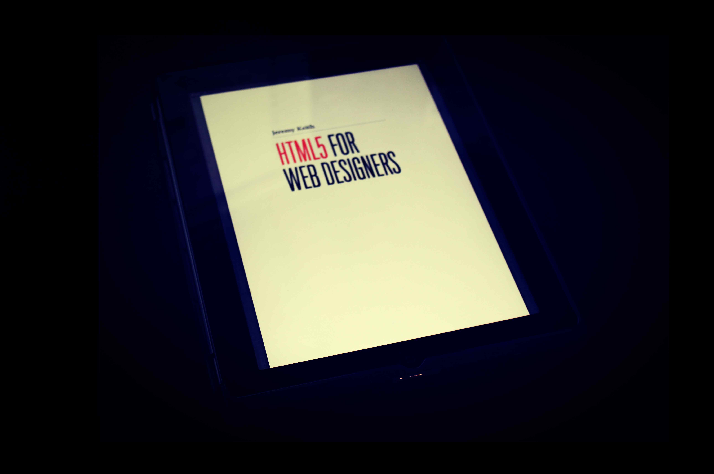
This week I decided to learn something new by getting to grips with the latest and greatest way of coding for the web, that being HTML5, the next evolution of HTML and the successor to HTML4.
As a result I picked up the highly recommended book from A Book Apart of HTML5 for Web Designers by Jeremy Keith. The book although a brief read gave me an insightful look into aspects and changes in HTML5. I liked the book as it got to the information quickly with short insightful points meaning my learning of the topic was not hindered by unnecessary content. I particularly enjoyed how the book delved into the current problems with standards and how HTML5 is an improvement on competing standards, this gave me an understanding on why I should try and adopt HTML5 in my work. I also liked the book as it allowed me to not start from scratch and learn and completely new skill but merely improve and build upon my existing skill set in regards to HTML.
HTML5 Resources
After reading Jeremy Keith's book on HTML5, I decided to look into other HTML5 resources online that aid me in my learning of this standard, turns out there was a plethora of HTML5 resources to choose from, the following are some resources that I found particular useful in helping me get to grips with this topic.
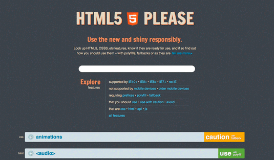HTML5 Please is a useful resource allowing you to look up HTML5 and CSS3 features and how to use them, the search bar option allows you to get to what your looking for quickly and has a lot of useful information covering a range of different features relating to HTML5.
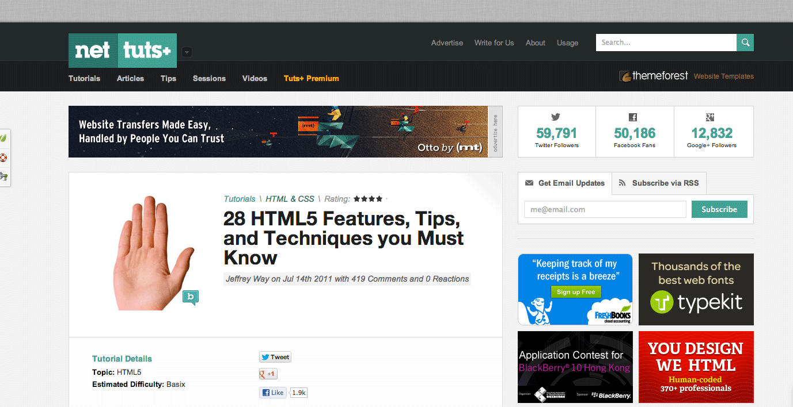Net Tuts offers a resource of 28 HTML5 features, tips, and techniques you must know, I found this resource helpful as it gave you a screenshot of different HTML5 code with a explanation of the code in action, this allowed me to gain a better understanding of the HTML5 element in question in a real life scenario.
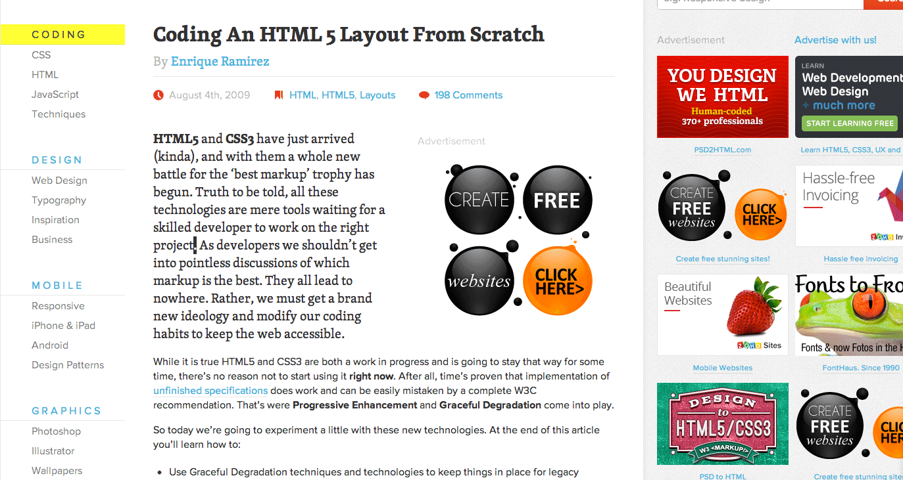Although reading books and online material is key to gaining an understanding of any new topic area the real learning curve comes in the implementation of what you have learned in a real life scenario. As such I was keen to find some online tutorials which would show me how HTML5 worked on the web, smashing magazines tutorial on coding an HTML 5 layout from scratch was a great tutorial in helping me achieve this.
Creative Experimentation
Experimenting With HTML5
Based on my research for this week I was keen to try HTML5 for myself, as a result I decided to do the tutorial which I discovered during my research, that being Smashing Magazine's 'Coding An HTML5 Layout From Scratch'.
Through following the tutorial I created the following page: My HTML 5 Layout Experimentation
A screenshot of the completed page can be seen below along with proof that it was to HTML 5 standards.
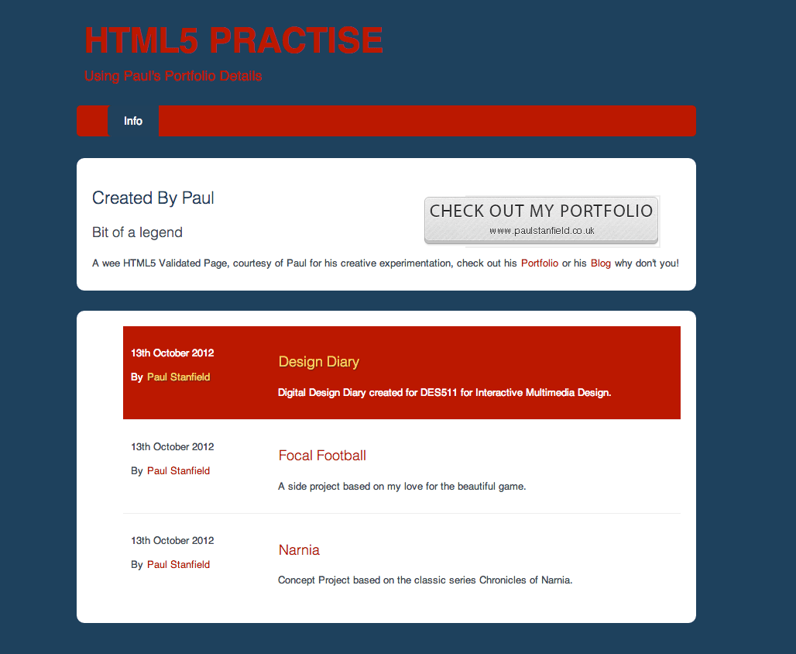 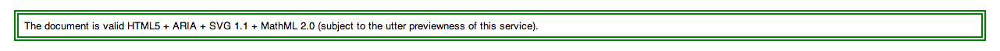References
- A Book Apart, 13/10/2012, A Book Apart, HTML5 For Web Designers [A Book Apart, Welcome], [online]. Available: http://www.abookapart.com/products/html5-for-web-designers [13/10/2012].
- HTML5 Please, 13/10/2012, HTML5 Please - Use the new and shiny responsibly [HTML5 Please - Use the new and shiny responsibly], [online]. Available: http://html5please.com/ [13/10/2012].
- net tuts, 13/10/2012, 28 HTML5 Features, Tips, and Techniques you Must Know | Nettuts [Web development tutorials, from beginner to advanced | Nettuts ], [online]. Available: http://net.tutsplus.com/tutorials/html-css-techniques/25-html5-features-tips-and-techniques-you-must-know/ [13/10/2012].
- Enrique Ramirez, 13/10/2012, Coding An HTML 5 Layout From Scratch | Smashing Coding [Smashing Coding, Client-Side and Server-Side Development], [online]. Available: http://coding.smashingmagazine.com/2009/08/04/designing-a-html-5-layout-from-scratch/ [13/10/2012].
Week 4 (Paper Prototyping)
Wireframe A User Path
Armed with my new major project concept and finally happy and excited about moving it forward I got cracking into this weeks task. For this weeks task we were asked to develop a series of functional wireframes that would outline at least one user path through our major project. The wireframes should be clear and functional with enough detail to spark a discussion during the one to ones next week. In keeping with the theme of this week we were encouraged to do these wireframes on paper.
So what user path will I be outlining? I have decided to outline the user path which forms the main focus of my website, that being purchasing a t-shirt on the website. Check out my paper based user path wireframes in the images below (the notes section on the pages is left blank in order for me to jot down feedback from Nicklas during our one to one session, I will upload a revision of the wireframes with said notes in week 5).
User Path: Purchasing A T-Shirt
- Home Page, Products Wireframes 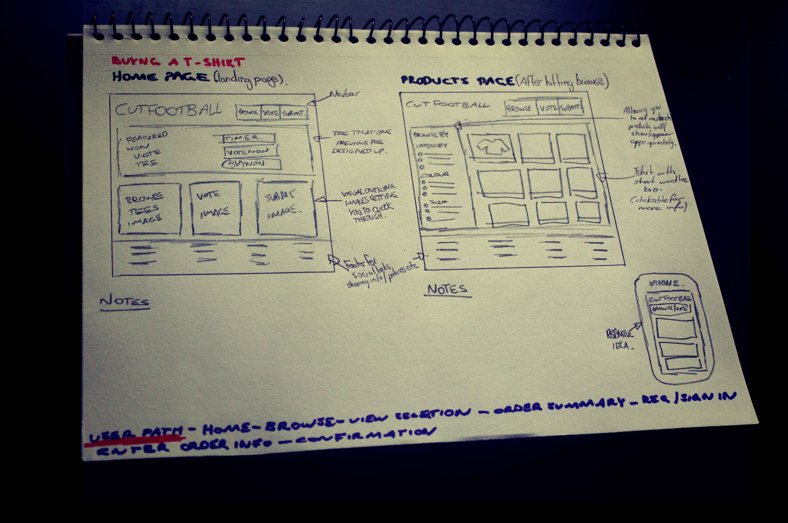
- Product Listing, Ordering, Sign In/Register to Shop Wireframes 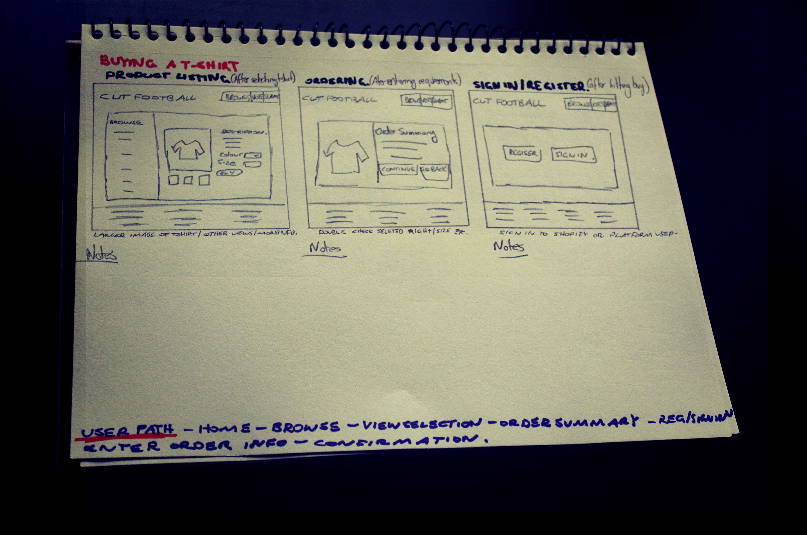
- Order Information/Order Confirmation Wireframes 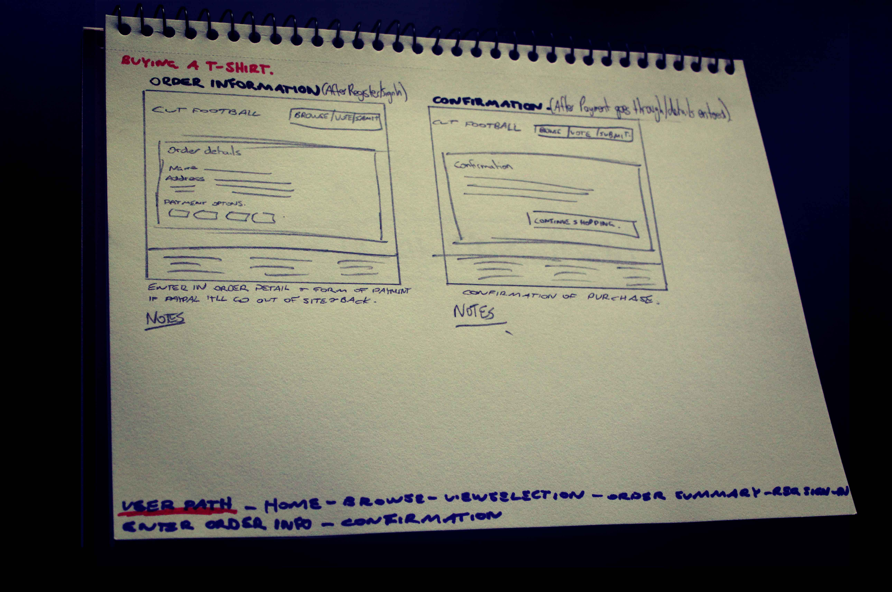
Changing My Major Project Idea / #projectfindanewidea
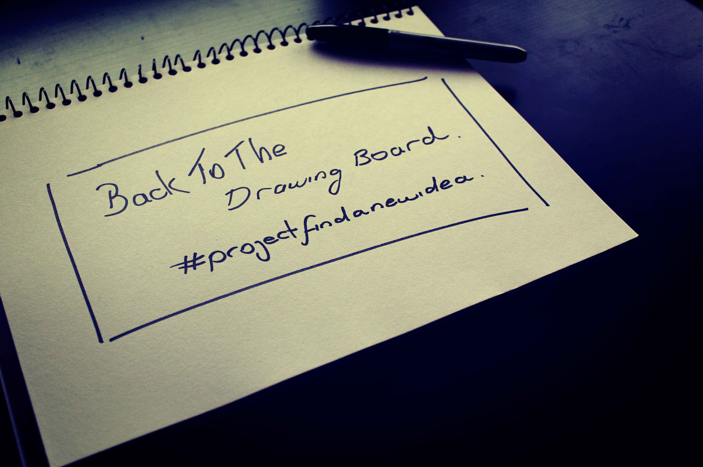
The Process
As I previously talked about in last weeks diary entry, I wasn't at all happy with my major project idea. As a result I gave myself until the end of week 4 to come to a conclusion as to where my major project was heading. So the end of week 4 is here and I am delighted to say that I now have a new major project that I am not only happy with but one that I am genuinely enthusiastic about and looking forward to creating. So how did I come to this pleasing conclusion? Well I started by scrapping my previous ideas and going back to the drawing board.I started to think about what I wanted my major project to be all about, what I was really looking for that I had not achieved in my previous ideas and what needed to be in an idea in order to be happy with it. I came up with the following elements that I wanted in my major project;
- A project that appealed to my passions and interests and had me genuinely excited (something I would think about when I am not even meant to be thinking about it)
- A project that wasn't just for university but had the potential to be carried on after my studies had finished
- A project which could lead to some sort of financial gain
- A project which had different elements, allowing me gain new experiences in different subject matters
These points would be helpful when it came to narrowing down my ideas after a good old brainstorming session. Armed with the idea that paper is better I took a sharpie and paper and starting firing down ideas. I started by writing down all the things that interested me, here's what I came up with;
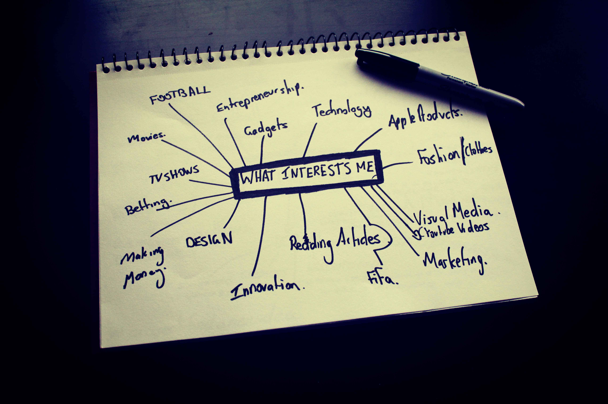This gave me alot of topic areas to delve a little deeper into, however just because I have an interest in certain things it doesn't mean that I'm really into it to the point that I'm going to be super excited and passionate about it if it was a major project, I think this was one of the mistakes I made when I was initially coming up with ideas the first time round. Due to this I decided to refine the above spider diagram down to not only what interests me but what im really passionate about. I then took these areas and expanded them further in order to get the ideas flowing. From this I got the following topic areas;
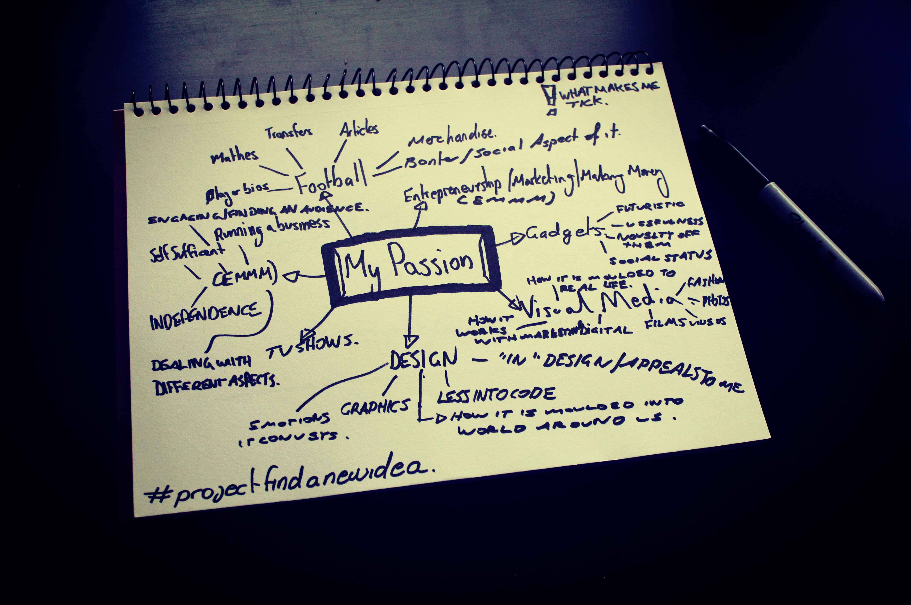With the ideas flowing and my idea generation taking a more thoughtful and focused approach I was now beginning to form ideas for projects. With this I decided to redo the homework set in week 1 to not only adapt my ideas further but to weigh the positives and negatives of each this would help me pick the strongest new idea to take forward as my major project. My new ideas and week one's task revisited follow below.
Task From Week 1 Revisited
New Idea 1 - If I Was The Manager
Saturday comes and you look at your football teams teamsheet, your thinking what is that manager doing? I could do better! Well now you can! With our site you pick your teams best starting eleven based on your opinions! Put your starting eleven up on our submit board and like and rate other peoples starting eleven.
Pros
- Community driven website with alot of interaction
- Opportunity for it to be a real success with a known target audience
- Opportunity to gain a better understanding of PHP
Cons
- Alot of data to collect on all the teams and players and formations
- User Interface and usability may be a mammoth task to undertake with a restricted timeframe
- PHP is not my strong suit
New Idea 2 - Football Related T-Shirt Design/Shop
Website which allows user to submit ideas for football related t-shirts to be designed by an in house team as well as buy football related shirts created by the website. Have an idea for a t-shirt but don't really have the creativity to push it further? Submit your idea to our team and vote for other ideas for it to be added to our growing online shop of contemporary T-shirt designs related to topical football matters. T-Shirt designs from us, thought of by you.
Pros
- Community driven website with alot of interaction
- Has a unique selling point as allows users to not have to create a design just have an idea which can be voted on, unlike other sites.
- Opportunity to gain some money out of the project if it takes off
Cons
- Designing all T-Shirt ideas myself may be difficult considering the time frame involved
- Other websites offer similar services, competition may be high
- The process of getting the T-shirts made and shipped may be costly and time consuming. The business aspect of the idea may take over from the design aspect.
New Idea 3 - Match Day Shots
Wanna see whats happening at your teams stadium on match day? Missing the match but want to soak up the atmosphere? Join our site and search for your team to see the photos on match day from supporters at the stadium.
Pros
- Opportunity to get to grips with an experiment with different API's (Instagram and Foursquare)
- Data and content collection easy as pulling the data in from social networks
- Has a specific target audience that it can be tailored too
Cons
- Perhaps a bit of an easy project, as it only pulls in data from social networks, perhaps lacks something.
- Not a great deal of experience with API's
- New apps such as Spots and twitters use of hashtags and new geolocation maps feature possibly do more or less the same thing
Task From Week 2 Revisited
In keeping with the exercise of redoing the weekly tasks to unfold a new major project idea, next up is the task for week 2. Week two's task involved us taking one of our ideas which was the strongest and had the most legs and developing it further. The new idea which I will be taking and developing further is the football related t-shirt design/shop. This is the idea I feel has the most potential and successfully fits the criteria I wanted in my final year project which I outlined earlier in this post. So, onto redoing the week 2 task.
Possible Idea Conveyed in 50 Words
Football Related T-Shirt Design/Shop - Submit ideas for football related t-shirts to be designed by an in house team as well as buying well designed football related shirts. Have an idea but don't really have the creativity to push it through? Submit an idea and vote for other ideas for it to be added to our online shop of contemporary designs relating to football topics.
Target Audience
The target audience for this project would be any football fan wanting to purchase a football related t-shirt which is fashionable. Instead of buying gimmicky poorly designed shirts, the audience would be attracted to this website if their looking to purchase a stylish t-shirt which showcases their interest in football. The target audience could also be people who have an idea for a football related t-shirt design but lack the necessary skills or imagination to take this idea from words into a visual image, this website would cater perfectly for them allowing their thoughts to potentially become reality in the form of a stylish well priced t-shirt.
User Journeys / Requirements
Buying A T-Shirt
The website will allow the user to purchase t-shirts online via and online store. This will involve the user browsing the various t-shirt designs and selecting the desired choice and size before paying for the product. This will mean the website must require an easy browsing and buying experience with a safe and secure method of payment.
Submitting A T-Shirt Idea
Users of the website will be able to submit ideas for t-shirt designs to the website in order for it to be added to the monthly poll of what t-shirt design will be made next. The submission will take place by contacting the website team by filling out a form with certain criteria. Perhaps giving a brief description of the idea in under 50 words. If that idea wins the monthly vote then the submitter of said idea will win a prize, such as discount of a shirt or their winning designed shirt idea delivered to them free.
Voting For Ideas
The website will have the feature of being able to vote for ideas on a monthly basis. This will work by voting on brief word descriptions of ideas for football t-shirt designs with the winning t-shirt designed being created. This will be done by a simple poll taking approach or perhaps by using Facebook API.
Possible Technologies Used
- XHTML/CSS - Building the site to make it it standards complaint and contemporary in design.
- Online Shop such as shopify to store and sell the merchandise
- Paypal for secure and easy payment
- Facebook integration for poll taking
- Responsive Design - Designed to work on a number of different devices of different sizes in order to increase the usability of the website.
Task From Week 3 Revisited
In keeping with the exercise of redoing the weekly tasks to unfold a new major project idea, next up is the task for week 3. Week three's task involved us considering factors for our major project idea. The new idea which I will be taking and developing further is the football related t-shirt design/shop. This is the idea I feel has the most potential and successfully fits the criteria I wanted in my final year project which I outlined earlier in this post. So, onto redoing the week 3 task.
How Does It Relate To Other Competing Products
Some websites offering the same kind of service or posing a level of competition for my project include;
- Qwertee 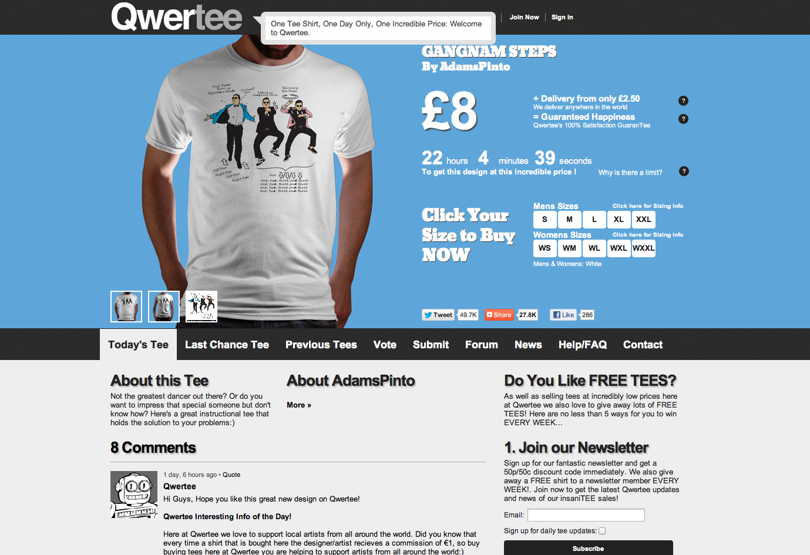
- Soccerprint 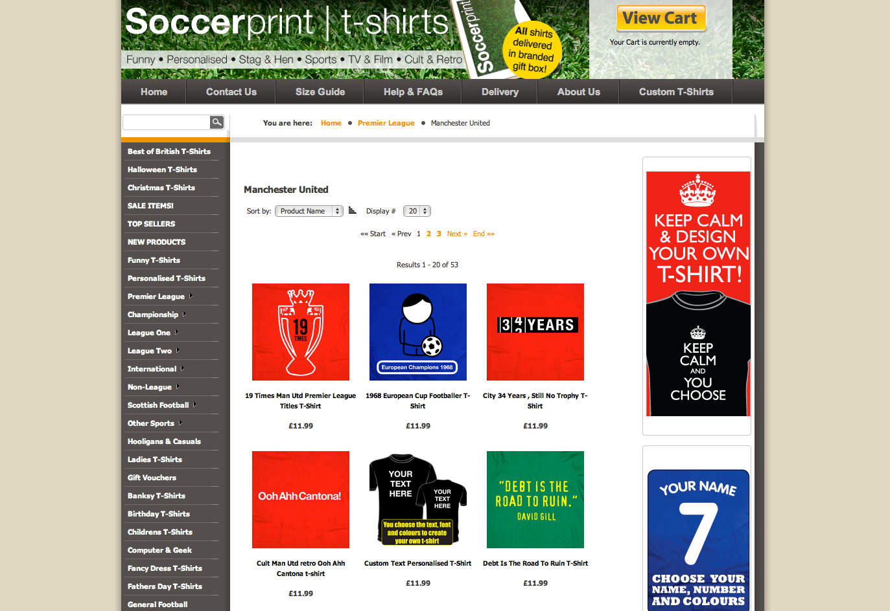
- Punk Football 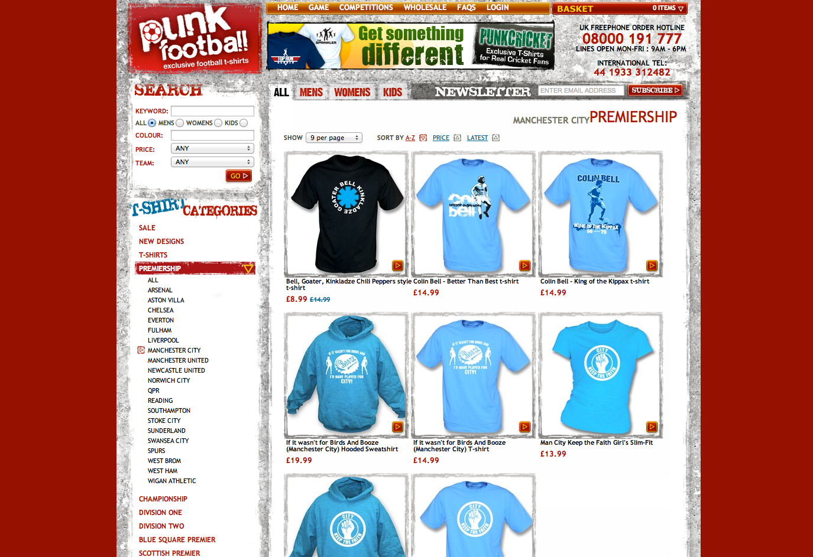
Qwertee is a t-shirt selling website which sells designs of t-shirts voted by users. Their site is unique from other similar sites as they only sell two t-shirts at any one time, that being the current t-shirt and the previous t-shirt, they do this for a limited time before refreshing the t-shirts that are currently on sale. My website would differ from this site as it would offer a more focused theme for the t-shirts being sold, that being just selling football related t-shirts. It would also differ as it would allow users to vote on 'ideas' for designs instead of actual designs.
Soccerprint offers football related t-shirts to buy on their site, however the site is poorly designed and navigation and usability is poor, I will aim to have a site which greatly improves on these features in my major project making the use of the website a seamless experience. Although Soccerprint offers football t-shirt designs, the quality of the designs is poor, I will aim to provide contemporary well designed t-shirts on my store. This is a big reason why I want to do this project as most football related t-shirts are poorly designed and not very fashionable, I aim to rectify this in my major project. The site also does not have a voting system for t-shirts and only offers a 'custom t-shirt' option where you directly contact the website for details on how to order custom designs, my website will allow user interaction allowing viewers to vote for t-shirt design ideas.
Punk Football is much like soccerprint in that it offers football related t-shirts to buy on their site, however the site is poorly designed and navigation and usability is poor, I will aim to have a site which greatly improves on these features in my major project making the use of the website a seamless experience. Although Punk Football offers football t-shirt designs, the quality of the designs is poor, I will aim to provide contemporary well designed t-shirts on my store. This is a big reason why I want to do this project as most football related t-shirts are poorly designed and not very fashionable, I aim to rectify this in my major project. The site also does not have a voting system for t-shirts, my website will allow user interaction allowing viewers to vote for t-shirt design ideas.
Unique Selling Point
The UPS of my major project idea is that I am offering contemporary t-shirts designs relating to football which can not only be worn for novelty purposes but also as a fashion statement. Another UPS is that I am offering a voting system allowing the public to vote on 'ideas' for designs instead of uploading their own designs or voting on designs uploaded by others. This will allow people who have an idea for designs but dont have the creativity/skills/resources to make them have their ideas for football related t-shirts potentially created through the voting system.
How Will The Project Engage With The Audience
The project will engage the audience through three main areas; the shop, the voting feature and the submit feature.
The shop will engage the audience by allowing the viewer to purchase custom designs made by the website (i.e. by myself), this will allow the user to view the items for sale on the website and then select the one/ones they choice to purchase and the size etc. This will then allow them to pay for their selections and enter their details via a seamless, safe and secure method.
The voting feature will allow the audience to engage with the website by voting for ideas of designs to be made into t-shirts to be available for purchase in the near future. The audience will be able to vote through a polling system which will show the different options you can vote for and how well the various options are doing on the poll.
The submit feature will allow the audience to engage with the website by giving them to option to submit ideas of designs of t-shirts to the website for consideration. If the idea is deemed appropriate it will be added to the voting feature of the website and allowed to be voted on for the chance to be potentially designed. If the idea wins the poll the person who has submitted it will win some sort of prize, such as discount on the website or a free t-shirt of their idea.
Existing Technologies I Could Leverage
- Pollcode for poll section
- Shopify - For store feature of the website 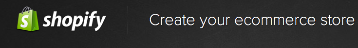
- Paypal - For easy and secure payment on the store
- Wordpress - In order to build the content management system for the site
- Boilerplates - Aiding the development of the project into a responsive website e.g. Bones Framework 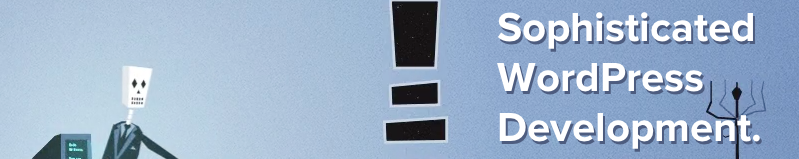
Research
Reading: A Technique For Producing Ideas by James Young
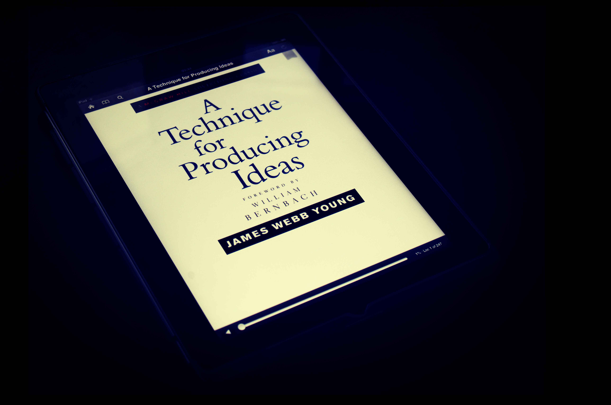
This week I decided to read a book recommended by the Standardistas, that being A Technique For Producing Ideas by James Young. I thought this book was an apt choice for this week considering my current dilemma of needing to changing my major project idea. I read this book before getting stuck into the process of generating a new project idea. The book proved to be an interesting and enjoyable read, not only was it full of clear, well laid out steps to carry out but I also liked the way the book was free of clutter, the book got to the point of why I was reading it quickly with no unneeded content which deviated away from the books purpose. Like probably most people who have read this book the main information I gained from this book where the steps to carry out to generating ideas, they are as follows;
- Gather raw materials (both generic and specific)
- Work over these materials in your mind
- Incubation stage (walk away, let your sub-conscious do the work)
- Birth of the idea
- Shaping and development of idea into practical usefulness
All and all the book the book was a great read that helped with my thought process when it came to idea generation. The book also give me renewed confidence and somewhat calmed me down that all was not lost and that I could come up with new exciting ideas. A book to definitely come back to again when ideas are drying up and you need a bit of a kick in the right direction.
Research Into Making T-Shirt Designs
This week armed with my new major project idea, I decided to do some research into finding resources which would help me in my quest of designing t-shirts for my major project. As I was navigating the web to find useful content I came across various information that proved useful, in particular I stumbled across an article by United Pixelworkers and some t-shirt designs which inspired me. I shall talk about each of these in turn in content that follows.
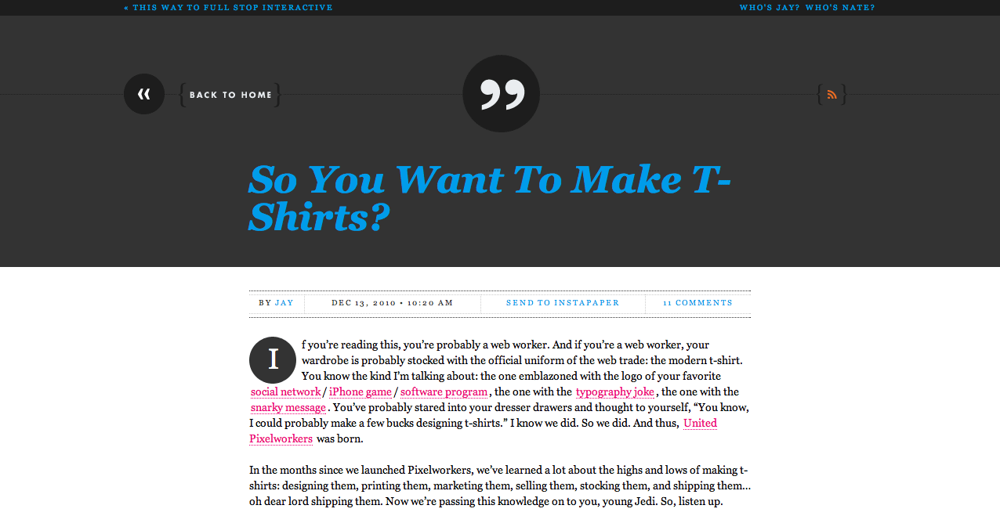An article I found particular useful and relevant to my major project concept was United Pixelworkers article titled 'So You Want To Make T-Shirts?'. The article covered some lessons learned by the United Pixelworkers team during the early stages of being involved in a t-shirt design and selling business. I found the article very useful and it gave me a sense of direction in terms of areas I must consider and focus on to make my major project concept become a reality. Key points from the article that I thought were vital and will prove useful as I move forward with my major project were the following;
- Use A Printshop- dont try and make and print the t-shirts all by yourself, find a local professional printshop to help you with the printing of the t-shirts, not only would this help in getting a tangible product but asking the printers questions relating to printing will help you in the design process
- Website - Have a well designed and appealing website, its not enough to have well designed t-shirts, you need to think about all aspects of the business, sell an experience not merely a product
- Advertising - Get the product your selling exposure through as many channels as possible. A useful tool in doing so is to run giveaways in order to increase the exposure of your product. Perhaps by giving away one of your t-shirts when you reach 500 twitter followers
- Retail - Although I am primarily a designer and I am looking at this project from a design point of view, I must also understand that if I am selling these designs then I have entered the retail business and as such must consider such factors as shipping, overhead costs, returns and customer satisfaction
In order to get some inspiration for my own t-shirts I decided to look at t-shirt designs from succesfull companies in order to get not only some ideas but to try and understand what made their designs so successful and desirable, during my research into this I found the following useful tips in regards to t-shirt design
- Creativity- Creativity must to be a high standard in terms of the design of the t-shirt, the message the t-shirt is conveying and how the t-shirt is being marketed for sale
- Simplicity of Product Lines-Focusing on selling one type of product i.e. t-shirts. Then it is easier to achieve an organised, usable and attractive website
- Design Styles- Having a design style or design direction in mind is key, this will not only help you create a brand for your company but will help you in creating a personality for your website, which ties into the products you are selling
During my research into designing t-shirts I came across alot of designs which not only appealed to me on a consumer level but that also inspired me as designer, this helped me to gain an understanding of the elements I would like to incorporate into my own t-shirt design process, some of the designs that particularly stood out to me and why can be seen below.
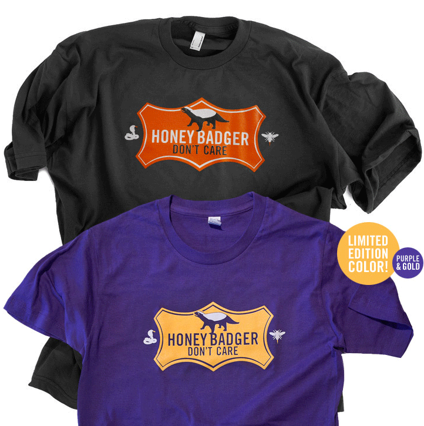
I enjoyed the above design for two main reasons, they colours and the personality of the shirt. I liked the colour palette adopted of the shirt as the I felt in both the black and purple t-shirt designs it gave a vibrant look to the shirt and immediately brought your attention to the graphic in the middle. I was a big fan of the personality of the shirt as I think the text of "Honey Badger, Dont Care" was quite a witty use of text, which made the t-shirt simple yet immediately effective. From this design I learnt that if your incorporating text into a design a short and snappy one liner can be more effective than lots of text on a t-shirt design.
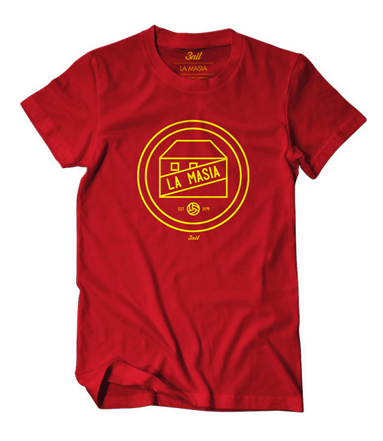I enjoyed the above design as I was immediately impressed by how simplistic yet effective the graphic was. The simple use of lines to create an illustration I thought brought a contemporary feel to the design whilst still remaining recognisable. From the this design I learnt that a design does not have to be over complicated to be effective, as long as it is designed well with a clear message being conveyed it can still be as effective as a highly detailed design.
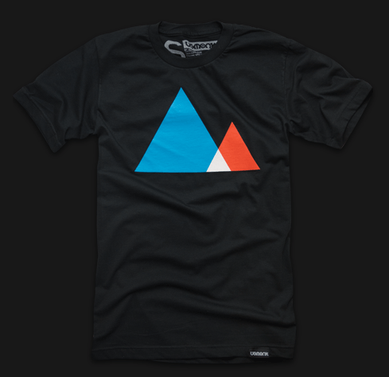I enjoyed this design again because of the minimal approach to the design concept. In particular I was intrigued by the use of shapes to depict a real life scene, that being the use of triangles to convey mountains. From this design I learnt that conveying a theme or message in a design can be done in a number of different ways which can be dramatically different from the normal way of conveying things. In adopting a fresh new way of conveying a message you can in turn create a contemporary design which sets yourself apart from other t-shirt designs.
Creative Experimentation
Workshop: Paper Prototyping
During this weeks workshop, paper prototyping was the theme. We were put into groups of three and given seven minutes to produce a mindmap related to our major project concept to see what ideas we could come up with. The exercise was all about getting away from the computer screen and letting the ideas flow organically with a sharpie and paper as our only tools.
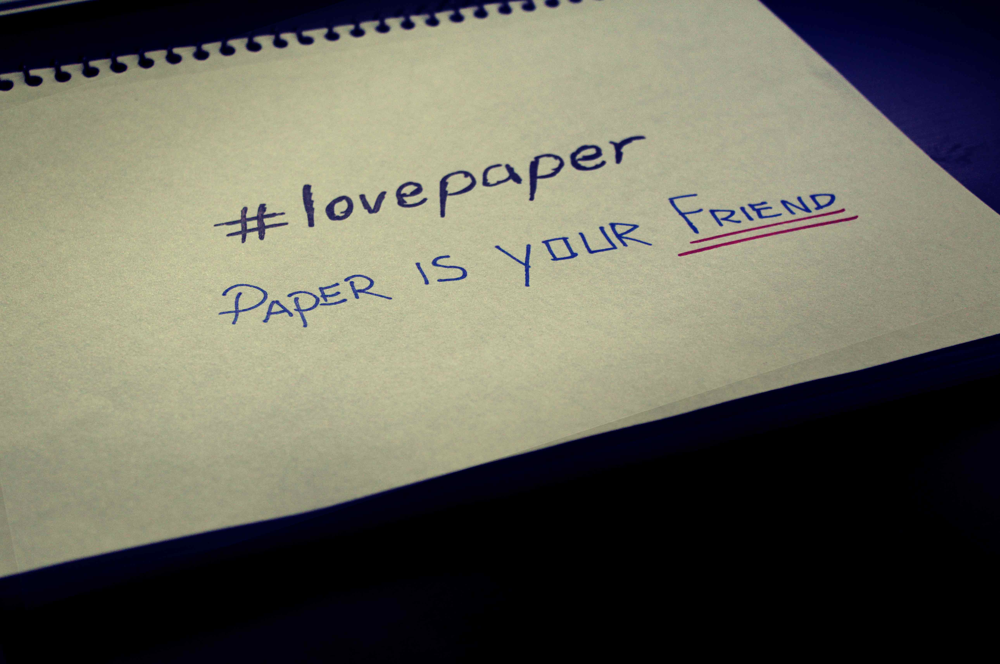Below is my mindmap I came up with based on this exercise related to my new major project concept of football related t-shirt designs/shop.

The next task was 6UP, which involved producing six different designs for a page of our website. I chose to focus on the home page of my major project website, focusing on how I could show the t-shirts I am selling. Here's what I came up with;
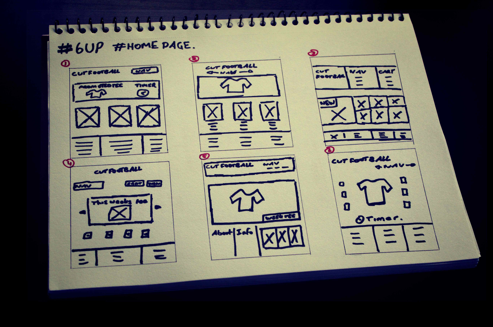Another element of my creative experimentation for this week was to draw up some wireframes showing a typical user-path through my major project website. This would be used as a basis on which to develop our ideas during our one to one sessions with the lecturers next week. see here, for my wireframes of a chosen user path.
Finally A Dribbble Player
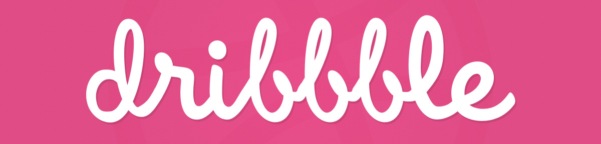
This week I finally got an invite to become a Dribbble player over at Dribbble. I was very pleased to get this invite as anyone who is familiar with Dribbble will know that those invite are like gold dust. Dribbble is a show and tell website for designers allowing them to upload 'shots' of their work in order to gain exposure and feedback. I think being able to upload work to dribbble will be a valuable tool to have as I develop my major project. Uploading iterations of my major project design will allow me to gain feedback and opinions from fellow designers on how I can improve my product. I am excited to see how dribbble can help me become a better designer and will be uploading some shots of projects I am currently working on soon.
References
- James Young, 20/10/2012, A Technique for Producing Ideas (Advertising Age Classics Library) eBook: James Webb Young: Amazon.co.uk: Kindle Store [Amazon.co.uk: Low Prices in Electronics, Books, Sports Equipment & more], [online]. Available: http://www.amazon.co.uk/gp/product/B001C34HUS/ [20/10/2012].
- United Pixelworkers, 20/10/2012, So You Want To Make T-Shirts? [Full Stop, Web design from Pittsburgh, PA], [online]. Available: http://www.fullstopinteractive.com/blog/2010/12/so-you-want-to-make-t-shirts/ [20/10/2012].
- Web Designer Depot, 20/10/2012, 26 Examples of Online T-Shirt Shops | Webdesigner Depot [Web Design Blog - Webdesigner Depot], [online]. Available: http://www.webdesignerdepot.com/2009/06/26-examples-of-online-t-shirt-shops [20/10/2012].
- Wire and Twine, 20/10/2012, Honey Badger Don't Care T-shirt [Wire & Twine], [online]. Available: http://www.wireandtwine.com/honeybadger/[20/10/2012].
- threenil, 20/10/2012, La Masia, 3nil [La Masia], [online]. Available: http://www.threenil.com/products/la-masia [20/10/2012].
- Ugmonk, 20/10/2012, MOUNTAINS (BLACK) | Ugmonk [Ugmonk], [online]. Available: http://shop.ugmonk.com/products/mountains [20/10/2012].
Week 5 (Content Out)
Revising My Userpath & Wireframes
This week I had my first one to one about my major project. For my first session my lecturer was Nicklas. I was quite anxious about the one to one for the sole reason that I had decided to change my major project idea and this was the first idea pitching it to the lecturers. Thankfully the project idea was well received and was deemed to be a much better idea than my previous major project idea, I was pleased with this feedback as I was very happy with this major project idea and was looking forward to getting into it so to receive the go ahead was pleasing. So in the one to one session I showed Nicklas my wireframes and layout for a chosen user path, Nicklas pointed out that I had prototyped a website which would be selling alot of t-shirts whereas my major project idea was focused around a few high quality t-shirts, due to this I had to revise my wireframes/chosen user path. Keeping this in mind, Nicklas told me to think about scarcity when I was paper prototyping these up.
Wireframes with Scarcity
First I decided to mockup a home page design wireframe with scarcity in mind and then based on this design a user path for purchasing a t-shirt, you can see the wireframes for my chosen user path in my creative experimentation for this week.
Below you can see my new home page design with scarcity in mind, I showed this new design to Chris and he indicated that I was going in the right direction for my website layout, with this advice I was happy to crack on with sketching out user path wireframes for my creative experimentation for this week.
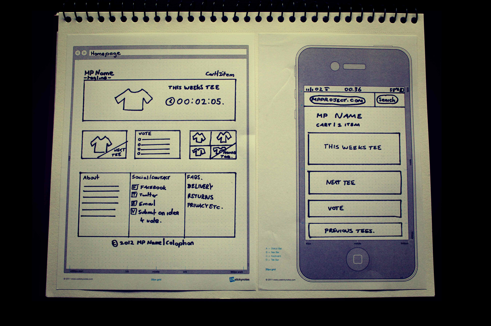Research
Reading: Ordering Disorder by: Khoi Vinh
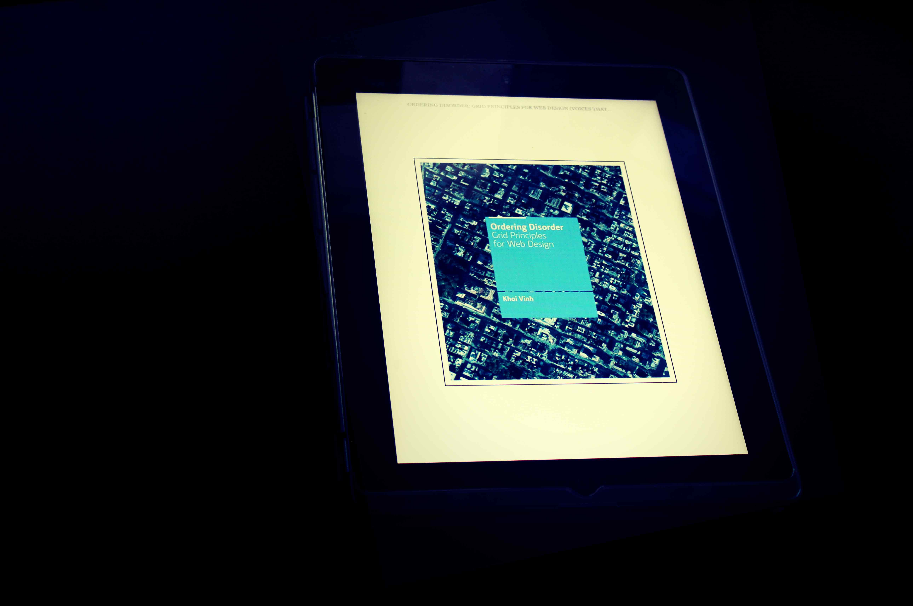
This week I decided to read a book recommended by the DES511 Lecture team, that being Khoi Vinh's book 'Ordering Disorder'. Ordering Disorder is written by Khoi Vinh, one of the most well known and respected designers in the industry today who is particularly known for his expertise on web layouts. The book covers grid based web design looking into the concept of the topic, the process involved in achieving a successful grid and how to execute said grid effectively. I particularly enjoyed the books section o how and why grids were created for web design as it give me a better understanding of why they were so important and lead to me appreciating the content of the book more.
Key points that I picked up from the book where that grids can change throughout the timeline of your project and that it is beneficial to start designing a grid firstly for the content pages rather than the homepage. I found this an important piece of information as I have always started by designing for the homepage first but can now see the merit in designing grids for content from the start. Another piece of information I took away from the book was that on developing grids it is okay if they can't be stuck to on every element of the pages on your website, this was a good piece of information to learn as I often found myself obsessing over certain elements and making them fit into my grid structure.
Effective Online Shop Websites
Based on my one to one with Nik last week I was told to try a develop a online shop which focused on scarcity as a result of my online shop selling a limited amount of t-shirts and designs instead of a whole mass of different products. The concept would be too promote the limited edition nature of the shirts I am selling in order to increase the hype for the shirts on sale. Also by focusing on an online shop which was minimalistic I would be able to create a better website design as opposed to a design which was built for a lot of products and then I only had a few products for sale which would in turn affect the presence and effectiveness of my website. Due to this I decided to look at some online shops which pay particular attention to scarcity and a minimal design approach.
Wire and Twine
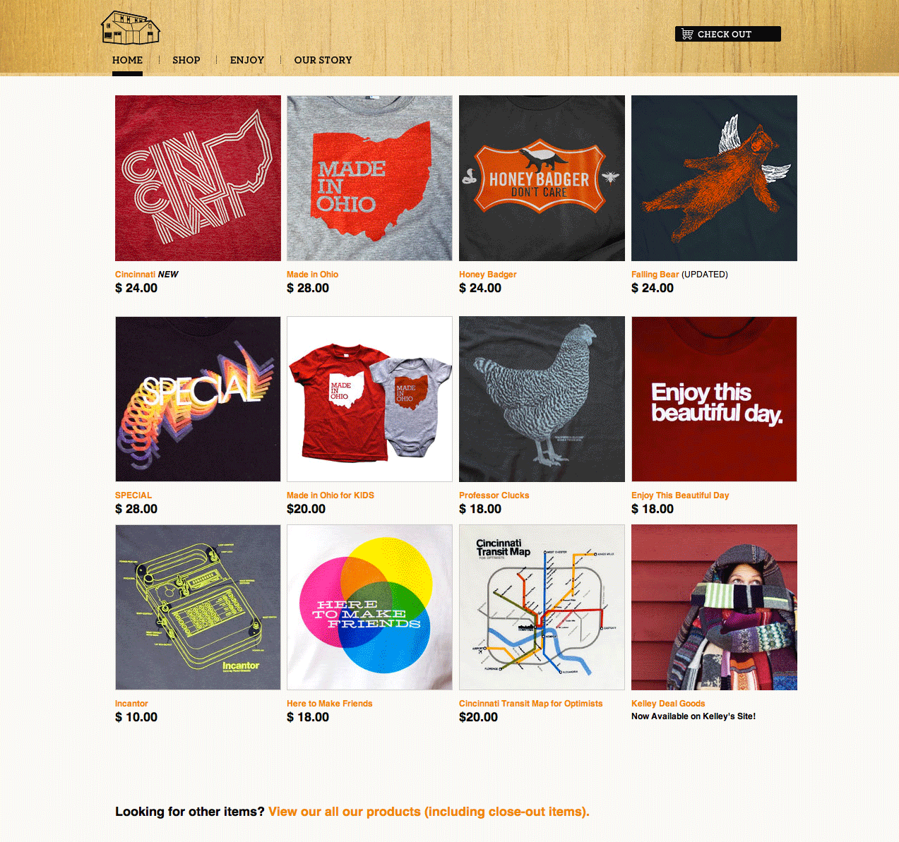 www.wireandtwine.com
Wire and Twine sell and limited amount of products, 20 to be exact at the time of writing this blog, as such they have a online shop which ties in well with a limited amount of stock being sold. They achieve this through keeping the website simple and representing a tiled approach to showcasing their products. What I liked most about this website was that even tho their products varied from t-shirts to hoodies they choose to keep them all in one page instead of splitting them up into categories. I felt this was a good decision as it lead to the shop looking full rather than sparse if they had chosen to adopt different pages for different products.
Happy Webbies
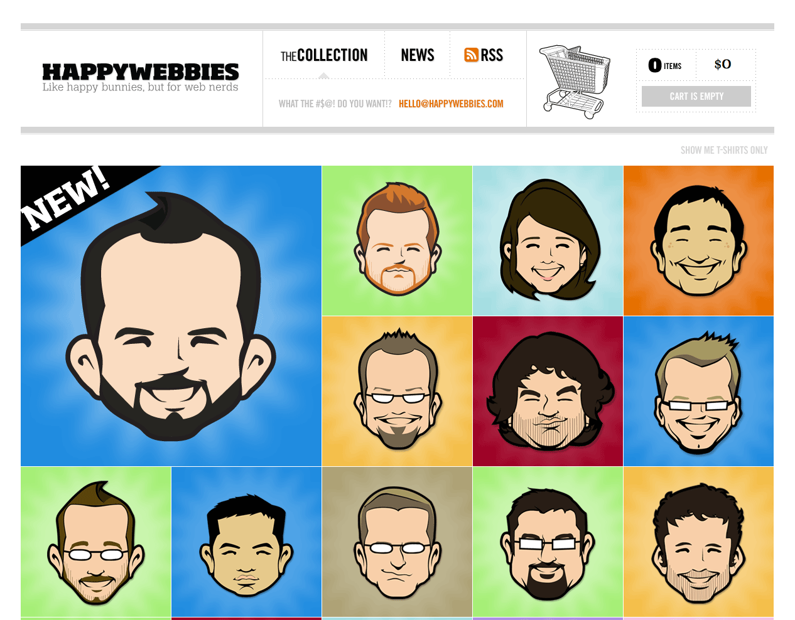 www.happywebbies.com
I enjoyed this online shop due to the creative way they approached selling there products. Instead of having a design which then displayed products for sale they have adopted to make the products for sale part of the design for website. By adopting the images that are for sale to make a tiled interface that the consumer can interact with to view products and buy them they have managed to create a unique and captivating site which is full of colour and personality.
Three Nil
www.threenil.com
I really liked this online shop due to it selling an experience more than merely products. Everything about the website was clearly thought out and tied in well with the products being sold. The content of the website and the way the words conveyed, to the design style of the website and the design and packaging of the products all tied in to create a brand and unique experience for the customer. By adopting this approach I feel the company has managed to nullify the the fact that they might be a small company with limited products by focusing more on the quality and style of there brand in order to build a presence for there company and become a success.
Online Shop Resources
This week I also decided to look into some ecommerce software which I could possibly take advantage of when building my online shop to sell my designs. I so far thought that because of the limited amount of products I would be selling that using PayPal would be the best option as there was no need to have a full shop for a couple of products but I decided to look into some ecommerce software as well as PayPal just to make sure I was covering all my bases and could make an informed decision moving forward.
Big Cartel
www.bigcartel.com
Big cartel is a simple shopping cart for anything from clothing and t-shirt designers to record labels and crafters. It others a plethora of features such as quick setup, track inventory and search engine optimization.
Shopify
www.shopify.com
Shopify is a ecommerce website solution that allows people to create online shops by offering numerous features to create an online store. It offers a number of different features including mobile commerce and secure shopping carts and has been used by a number of well known companies such as A Book Apart and Studio Neat.
PayPal
www.paypal.com
PayPal is well known to most people as and easy, secure and efficient payment option that is adopted on a number of large company stores as an alternative method of payment. However it can be adopted as a primary method of payment on websites looking to sell products, such companies as 3 Nil already adopt this payment approach for their online store.
Creative Experimentation
Redoing My Initial User Path
Below you can see my revised user path based on my new website design/layout. The user path shows how a customer would go from landing on the home page of the website to eventually purchasing a t-shirt. I have tried to keep this user experience as seamless and minimal as possible to increase usability and enhance the quality of not only the website but the brand in general.


References
- Khoi Vinh, 27/10/2012, Grids [Grids], [online]. Available: http://grids.subtraction.com/ [27/10/2012].
- Wire and Twine, 27/10/2012, Wire & Twine [Wire & Twine], [online]. Available: http://www.wireandtwine.com/ [27/10/2012].
- Three Nil, 27/10/2012, 3nil [3nil], [online]. Available: http://www.threenil.com/ [27/10/2012].
- nGen Works, 27/10/2012, Happy Webbies are like Happy Bunnies, but for web nerds. Desktops and shirts for web designers. [Happy Webbies are like Happy Bunnies, but for web nerds. Desktops and shirts for web designers.], [online]. Available: http://www.happywebbies.com/ [27/10/2012].
- Tina Roth Eisenberg, Daymond John, 27/10/2012, Ecommerce Software, Online Store Builder, Website Store Hosting Solution- Free 14 day Trial by Shopify. [Ecommerce Software, Online Store Builder, Website Store Hosting Solution- Free 14 day Trial by Shopify.], [online]. Available: http://www.shopify.com/ [27/10/2012].
- PayPal, 27/10/2012, Pay Online, Transfer Money or Accept Card Payments Online - PayPal [PayPal], [online]. Available: https://www.paypal.com/uk/webapps/mpp/home [27/10/2012].
- Big Cartel, 27/10/2012, Big Cartel - Simple shopping cart for artists, designers, bands, record labels, jewelry, crafters [Big Cartel - Simple shopping cart for artists, designers, bands, record labels, jewelry, crafters], [online]. Available: http://bigcartel.com/ [27/10/2012].
Week 6 (Build A Brand)
Prototyping
During this weeks lecture we were encouraged to start prototyping for our major project, from the lecture it became evident to me that this would form a vital part of my overall mark so for this weeks task I got started on turning my major project idea into reality. Mindful that I would go through many iterations of my project idea before reaching the final outcome I was aware of how crucial prototyping would be to reach this end point.
Before I delve into my prototyping I shall point out that based on my creative experimentation and research for this week I was aiming to name my major project Cut Football. Although this name my change over time and after critique from the lecturers I decided to purchase the domain anyway due to it being a bargain at 10 pound. If nothing else it would allow me a place to put my ideas up on the web for this project, such as a landing page in order to gain some exposure and feedback. If the name proves to be ineffective and thrown out I can always revamp the name and branding and leave Cut Football as a element of my creative experimentation. Win win.
Holding Page Prototype
So first up I decided to make a holding page for my major project. I had previously thought this would be a good idea and this was further backed up during my one to one with Nik. The holding page would allow me to gain some feedback and exposure for the project whilst I am building it over the coming months and it would also give me a physical presence on the web that potential business contacts could look at if I was contacting such people for help with my major project. A well presented and engaging holding page for a company to look at is more likely to draw the person in to my idea and take me seriously instead of me emailing them saying "I'm a student, please help".
I got started on paper prototyping some ideas for a landing page last week, so this week was all about building it, mindful that I was not set on a name or branding elements as of yet I wanted to created a holding page which was easily adaptable as my idea involved in terms of branding, design and features. At this point I wanted my holding page to display the name of the project with an engaging tagline, contact information and a poll in order for people to vote on ideas for t-shirts. The poll would form an important part of my major project on its completion but I thought I may as well start gathering peoples ideas for t-shirts from the offset, this would allow me to design t-shirts that people actually want and would also allow me to evolve and perfect the poll taking feature of my project over the coming months.
For the paper prototyping that went into my landing page check out my for this week.
Below is a screenshot of said holding page I built for my project under the initial name of 'Cut Football', to see the page working in all its glory online check out the following, holding page for major project.
First T-Shirt Design Prototype
Next up I decided to try my hand at some t-shirt design concepts. Although my major project website would be selling t-shirts that have been created around ideas from the public there will need to be some t-shirts available at launch which can be purchased allowing time for the polls and user interaction on the website to gain pace whilst still be able to generate profit for the website. Also having t-shirts available on the website will encourage viewers to submit/vote on ideas as if they see the quality of the t-shirts the website is currently making they will be more excited to potentially see their ideas being created by a design team which is already producing effective final designs.
I decided to focus my first t-shirt design concept around a football concept which is well known and fairly topical throughout the year, that being the manic hair of Everton and Belgium footballer Marouane Fellaini. Below you can see the prototype for this t-shirt design.
For the creative process that went into this design check out my creative experimentation for this week.
Research
Reading: Reading - Logo Design Love By David Airey
This week I decided to do some research into brand identity as a result I picked up David Airey's highly recommended book Logo Design Love.
David effectively explains the importance of an effective design identity and how to plan the design process for brand identity from start to finish. A key element of his book which I will be looking to for inspiration during my creative experimentation for my major project branding is his concept of 'seven ingredients for your signature dish' where he breaks down a list of elements which should be seriously considered in brand identity:
- Keep It Simple
- Make It Relevant
- Incorporate Tradition
- Aim For Distinction
- Commit To Memory
- Think Small
- Focus On One Thing
Another part of his book which I found particular informative and helpful was the concept of starting with a pencil and paper before jumping on the computer to start designing. This had been covered in our design lectures as well but it never hurts to hear it from another source to stress the importance of it. One of the elements of starting with pen and paper from the book was the concept of mind mapping to come up with ideas, I thought this was a great idea as I was still at this point undecided about what direction my brand should go in so mind mapping sounded like an excellent idea for future creative experimentation into this area of my major project.
Inspiring Brands
Now that I have grasped a good understanding of the concept of brands and what is involved in designing them effectively I decided to take another look at brands that had been cited for the excellent design in order to hopefully draw some information from them. I stumbled upon an interesting article from Just Creative which had a poll going for best logo design of the year for 2011, the logos that where up for the prize, once again all had some similar characteristics, simple, clean designing which effectively portrayed the image of the company, see below for some of the best logos that where up for the prize that particularly caught my eye.
Fashion Law Institute is a new center at Fordham Law School in New York that will train and advise designers, lawyers and design students in areas of the law affecting the fashion industry. Their brand is minimal and sophisticated in design drawing on elements of law and design to make an illustration which sits nicely above formal and strong typography. I was a big fan of this brand as they successfully managed to tie in the different elements that are associated with the School whilst retaining a minimal and contemporary design.
Fine Cell Work is made up of hundreds of UK prison inmates filling their hours sewing cushions and quilts. They earn money, gain skills and create a real sense of community. The logo created for Fine Cell Work came from the contrasting worlds of UK prison life and needlework. I though this was a fantastic piece of branding as they have managed to create a contemporary and stylish brand for a area of society which might not be seen in the highest regards. However with their approach to this brand it really comes across as a professional and high quality operation.
The above brand is for Fork and Knife Restaurant, I really like the illustration piece of this brand which ties the fork and knife into the one graphic. I also really like the colour palette chosen for this brand as it gave a rather clean and organic feel. I felt the green made me think of high quality standards and fresh food, which is ideally want a restaurant would want an audience to feel in relation to their brand.
Creative Experimentation
Major Project Names
In the coming weeks I would be further prototyping in relation to my major project, with this in mind I started to brainstorm some ideas for a name for my major project. This name would be in no means set in stone but it would give me some direction for my project and would allow me to put a face to my major project in terms of branding and a holding page.
I started by thinking of words associated with my project the following is a plethora of words that I associated with the project.
football, soccer, sport, futbol, pitch, terrace, crowd, fan, stadium, clothing, apparel, attire, fashion, style, cut, custom, form, line, tailor, design, trend, assist, ball, extra-time, 4-4-2, formation, playmaker, touchline, tees
After a week going back and forth with names and thinking at the project from every angle I came up with the following list of potential names.
- Swag Football
- Cut Football
- Football Cuts
- Football Threads
- Futbol Swag
- Touchline Tees
- Crowd Cuts
- Four Four Tees
- Touchline T-Shirts
- Four Four Four Shirts
After alot of thought regarding the name, I decided to go ahead with Cut Football as the name of the project at this stage of the project. I decided to go with this name as I thought it was the most catchy and contemporary of all the names. Whilst 'Cut' would relate to design of clothes and 'Football' would of course be relating to what the designs are based on. Another factor for choosing this name was that the domain as well as all social handles where available for this name which is ridiculously hard to achieve these days.
Holding Page Prototype
This week I wanted to try my hand at creating a holding page for the project. My first thought was to create a page which would have a poll which would allow people to vote on potential t-shirt ideas to be designed as well as the obvious information such as information about the project as well as email and social links. This is the prototype I came up with.
holding page for major project.
On reflection of the holding page I was not entirely happy with it. I initially thought that including a poll at this stage of the project would be a good idea but I now think it is too early for this and that it would be better to show some designs of t-shirts that would be available to be bought in the future. My reasoning for this is why would people vote on t-shirts when they have no idea what the quality of the designs would be? It would be better to gain some exposure and some reputation first through some of my work and then the poll taking can come at a later stage once I have built up an audience. I also thought the photograph in the background would work well but it seemed to be a problem in terms of reading text on top of it at different resolutions. Some work also needed to be done to the branding as this was merely a placeholder for the branding as I worked on elements for the holding page.
All and all a successful start to building a holding page as it allowed me to iron out some of the problems, I will be aiming to improve my landing page as well as setting up a some social media profiles in next weeks experimentation.
T-Shirt Design Prototype
This week I decided to get started on what I would actually be selling on the website, that being t-shirts with custom designs. Once the website is up and running I would like the ideas of the t-shirts to be derived from a poll-taking system from viewers that would allow users to vote on ideas for future t-shirts. However to get the ball rolling and to get some exposure for my project as well as some items to sell on the website at launch I decided to design some t-shirts based on my own ideas. I made a list of possible ideas for t-shirts which could of course be added to in the future.
I am not exactly sure how many t-shirts I will have for sale at launch due to me wanting to create a limited edition brand with only a few items for sale at a time but this would be a good start for my prototyping and would allow me to get my hands dirty with creating some apparel.
Possible T-Shirt Design Ideas
- Footballer for Everton and Belgium, Marouane Fellaini with his crazy afro hair
- Footballer for Paris Saint Germain and Sweden, Zlatan Ibrahimovic with his boastful opinions and distinctive features
- Footballer for Manchester United and Holland, Robin Van Persie and the fact the man just can't stop scoring
- Retired footballer and current Barnet manager Edgar Davids and his iconic glasses
- The ridiculousness of Roma and Italy footballer Danielle De Rossi's tattoos
- Footballer for AC Milan and Italy, Antonio Nocerino with his perfectly crafted beard
- David Beckham and the clubs he's paid for
With a few ideas already starting to brew I decided to crack on with one of them towards a workable prototype. I decided to start with Marouane Felliani for my first prototype. Here's what I came up with
The idea for the shirt was to focus on Felliani's crazy afro hair that he has come so iconic for in recent seasons. I aimed to achieve this by using a simple illustration approach to design the outline of his hair before adding a subtle touch of humour by adding in an afro pic with the initials of the club he plays for. I tried to make the t-shirt appeal to fans by choosing a colour palette similar to that of the kit he plays in for Everton.
I was quite happy with this prototype and decided to get some feedback by putting it on Twitter and Dribbble, the response was overall very positive and encouraging, below you can see some of the comments that where made about the design. I was quite proud to achieve some positive feedbacks by some well know illustrators.
References
- David Airey, 03/11/2012, Logo Design Love [Logo Design Love], [online]. Available: http://www.logodesignlove.com/ [03/11/2012].
- Jacob Cass, 03/11/2012, Top 12 Logos of 2011 As Voted By You | JUST Creative [JUST Creative - Graphic Designer, Logo & Brand Identity Specialist], [online]. Available: http://justcreative.com/2012/01/03/top-12-logos-of-2011/ [03/11/2012].
Week 7 (Designing Experiences)
Meeting With @fehler
This week I had my second one to one meeting, this time with Christopher Murphy a.k.a @fehler. The meeting went very well with Chris liking the concept for my project as well as the prototypes I had created so far. He thought I was on the right track in terms of the wireframes for the website and was pleased with my first t-shirt design that I had created. Chris thought my major concept had enough substance to turn into a viable business and encouraged me to think of ways to raise funding and get these t-shirts available for sale. I was very encouraged and had added enthusiasm after how well the meeting had went. Points I took away from the meeting where to get some more t-shirt designs prototyped up, start getting the major project some exposure and to start prototyping the website. The overall message was to just do it, in other words carry on from last week and keep prototyping and iterating this idea towards reality. So onwards with the making things.
Research
Ways To Raise Funding
During my talk with Chris we talked about how I could turn my major project into a viable business venture and how I should look into funding in order to get some capital for the production of t-shirts. Therefore I decided to look into possible channels that I could take advantage of to possible fund my major project.
One possibility to get some capital for my project is to get a small interest loan from the bank, the advantages of this would be that it would instant cash to invest straight into the project however the downside of such an approach is that I would be taking quite a high level of risk considering interest rates and I would be banking on the company becoming quite a substantial success in order to pay back the loans. Im unsure if this would be a wise decision considering my current financial situation however it could be a good option if my project gets a lot of publicity and attention in the coming months.
Another possibility for funding is to take my business idea to Invest NI to try and get some investment through their schemes. This would potentially be a good channel to target as a result of the help and guidance they would give me in starting a new business. I also have some experience with working with Invest NI from my time spent on placement which would stand me in good stead in working with them in any possible ventures. The downfall however of Invest NI would be the red tape and politics associated with the schemes which may lead to a long and protracted process to get funding that may prove to be a problem considering the deadline of May 2013 for this project.
Another possibility and probably the most viable and appropriate funding option would be to put my business idea through its paces over at Kickstarter in order to crowd source funding. This would be a beneficial source of funding due to it guaranteeing not only funding but sales if the idea was to gain success and publicity on Kickstarter. The only downfall I can see with this would be getting people to invest in the project but with the right type of publicity, with the help of the lecturers and a strong brand identity I think this could be achieved.
Companies That Sell An Experience
During our lecture this week we talked about designing more than just a product, service or website but designing a whole experience from start to finish and beyond. Due to this I decided to look at companies who were successfully selling a experience to their customers
Apple is probably the most well known brand for selling an entire experience to their customers. Everything from Apple is intricately thought about from the website, to products, to the Apple stores. An excellent example of this is when you go into an Apple store, it dosent really feel like a store, it feels like your going in to hang out, apple have thought about everything about the store so that your immersed in the Apple ethos from the minute you walk in to the minute you walk out. Apple even think about the packaging of their products to the finest detail, being famous for making it hard to open the boxes of products in order to build suspense for your new device.
I recently came across Ugmonk due to my research for my major project and was so impressed by their brand and product line that I picked up some of their goods of a ampersand jumper and leather bound notebook. I was already impressed with how the design of their website and their product tied in well together but I was even more impressed when I received my items in the post, every detail of the packaging had been thought about (see image above) in order to continue the experience of Ugmonk even after I had hit purchase on the website in order to make me realise that I have bought a high quality and unique product.

Nike is another brand that prides itself on selling an experience, this particularly became evident to me on a trip to America when I was luckily enough to visit some of the large Nike Stores, I was surprised how their stores are basically an extension of their clothing and their website, everything from the personalities of the Nike staff to imagery and media being displayed in the store was all tied into the Nike brand and identity. Nike further enhances their experience by associating themselves with athletes which embody the ethos of their company. An example of how having celebrities is more than a mere marketing piece for Nike is how they will immediately pull adverts of athletes if they have received extremely bad publicity, as a result of Nike not wanting it to reflect badly on their brand.
Creative Experimentation
Second T-Shirt Design Prototype
I had received a lot of positive feedback regarding my first t-shirt design concept from people on Dribbble and Twitter as well as Christopher Murphy. My design had actually been seen by a few Fantasista artists via Twitter and they I had expressed how much they had enjoyed the design concept. All in all a positive and encouraging reception on my first piece for this major project. Buoyed by this feedback, I carried on from last weeks t-shirt design prototyping to get more designs created for this project. You can see more on my creative experimentation for this in the creative experimentation for this week. Below you can see the next t-shirt design concept I have created for my major project, I will aim to gain feedback on this concept from the lecturers during my next meeting.
Zlatan Ibrahimovic T-Shirt Prototype
My next t-shirt design was based on mercurial footballer Zlatan Ibrahimovic. Zlatan is known for his overconfident and cocky attitude often coming out with quick witted and boastful remarks. He is also characterised by his long hair and protruding nose.
I aimed to create a t-shirt design based on these concepts, choosing to focus on his facial features and one of his famous quotes of "Zlatanstyle", which was his response to a journalist when asked "What type of football do you play?". I have also played homage to Zlatan's country of birth by using a colour palette which draws on the traditional colours of Sweden. Check out the design below.
References
- Invest Northern Ireland, 10/11/2012, Welcome to Invest Northern Ireland [Welcome to Invest Northern Ireland], [online]. Available: http://www.investni.com/ [10/11/2012].
- Kickstarter, 10/11/2012, Kickstarter [Kickstarter], [online]. Available: http://www.kickstarter.com/ [10/11/2012].
- Apple, 10/11/2012, Apple [Apple], [online]. Available: http://www.apple.com/ [10/11/2012].
- Ugmonk, 10/11/2012, Ugmonk [Ugmonk], [online]. Available: http://www.ugmonk.com/about/ [10/11/2012].
- Nike, 10/11/2012, Nike.com (GB) [NIKE, Inc, Inspiration and Innovation for Every Athlete in the World.], [online]. Available: http://www.nike.com/gb/en_gb/ [10/11/2012]
Week 8 (No Lectures But More Learning)
Branding Prototyping

Read about my thought process for this in my creative experimentation for this week.
Redoing the Landing Page Based On Branding
Read about my thought process for this in my creative experimentation for this week.
Research
With this week being Build week and unfortunately being unable to attend due to financial restrictions and work commitments I decided to have my own mini Build if you will. Well not really a mini Build, I just decided to watch a number of talks from some successful entrepreneurs and designers. I though this was a good idea not only to draw inspiration from their experiences and lessons learned but also thought it would be a nice change of pace from conducting research through reading. I ended up watching three interviews by Kevin Rose with some successful entrepreneurs and also Wilson Miner's talk from Build last year. The videos can be found below with a short description of what I took away from each of them.
My personal favourite of the four was Scott Harrison's interview where he talked about his work with non-profit charity, Water. All in all I found watching the thoughts and opinions of other entrepreneurs and designers very informative and it really gave me extra incentive and inspiration to move forward with my major project. It was inspiring to hear that no matter your circumstances, idea or potential obstacles that might be in your way to being successful, they are all potentially able to be overcome if you have enough drive and passion for the idea you are trying to achieve.
Scott Harrison, Founder of The Non-Profit Charity:Water
This was personally a truly inspiring piece to watch. Scott Harrison talks about his life and how it all changed from being a successful and rich night life owner who was totally immersed in all the pitfalls of the industry to how it all changed and he eventually found christianity and got involved in charity before starting his own company charity:water. I thought this was a great piece as it showed me that your never too old/young to go after your dreams or get involved in your passion. Scott talks about how he started companies on basically no money at all which taught me that a passion to succeed is more important than having the capital to fund a business.
Founder of StyleSeat, Melody McCloskey
Melody talks about her life and how she eventually became the founder of Styleseat, an online destination for beauty and wellness professionals and clients. The overriding point I took away from this talk is that you dont necessarily have to be completely skilled in the industry you are trying to tackle. The important thing is to acknowledge your strengths and capitalise on them fully. Another point I took away from it was that it is vitally important that you love what your doing if you are the driving force behind a company or vision. Melody talks about working ridiculously long hours and having next to no social life but that she dosent mind at all because she loves what she is doing.
Founder of Instagram, Kevin Systrom
Kevin Synstrom talks about his life and how the hugely popular photo sharing social application Instagram, came to fruition. One of the most surprising things I took away from this talk was that the backbone of the idea behind Instagram actually came from Kevin's wife coming off with a comment of 'I wish I could take really good photos that look professional'. I thought this was a great origin story of the company and it taught me that not all great ideas are discovered out of hours upon hours of research and planning. Another vital point I took away from the talk was that it is important that your idea/company is solution to a need/want as there is no point creating something that people have no need or desire for.
When We Build - Wilson Miner
Wilson Miner's talk from Buildconf 2011 titled 'When We Build' was a truly inspiring talk that reaffirmed why I enjoy this industry and why I am studying on this degree course. One of the more poignant quotes from Wilson was 'When we are gone, all that is left is what we made' and how that being in this industry is a blessing as we are the people who are shaping the design and lifestyle of the future. It really gave me renewed inspiration and drive for design and was a very uplifting and moving talk. All of the talk is pure gold but from minute 37:08 on was truly inspiring and thought provoking, a great watch.
Creative Experimentation
Working On Branding
The idea behind this prototype brand was to try and draw on the past of football whilst creating a contemporary brand with a minimalistic design approach. I tried to embody the fact that football is a sport of rich history and class by including an illustration of an old fashioned ball. I then tried to make the brand as contemporary as possible by keeping it minimalistic both illustration wise and in terms of the colour palette. I made the brand come across like a football badge in the hope that as the community grows in relation to this project that it will become much like a 'football club' in terms of the close knit community it will hopefully form in terms of producing t-shirt ideas through voting, which will tie in well with the branding if this becomes a reality. I am quite happy with this prototype of the branding and feel it has the scope to work at different sizes, perhaps at a smaller size the text of Cut Football would be removed to leave a smaller version of the badge that just embodies the stars and the ball. I will aim to improve on my branding in the coming months.
Fixing Holding Page
I decided to create a new holding page that would tie in with my branding prototype, I decided to keep this holding page clean and simple due to the fact that I was in the early stages of my project and it was likely to change alot over the coming weeks, therefore having a simple holding page will mean that it will not need constantly changed as my project changes allowing me to spend more time on the actual website.
I also set up some social media profiles for my major project based on the branding I had prototyped so far in order to hopefully gain some exposure for the project as it grows towards completion.
References
- Kevin Rose, 17/11/2012, Foundation [Foundation], [online]. Available: http://foundation.kr/ [17/11/2012].
- Buildconf, 17/11/2012, Build 2011 [Build 2011], [online]. Available: http://2011.buildconf.com/ [17/11/2012].
- Vimeo, 17/11/2012, Vimeo, Your Videos Belong Here [Vimeo, Your Videos Belong Here], [online]. Available: http://vimeo.com/ [17/11/2012].
- Youtube, 17/11/2012, YouTube [Youtube], [online]. Available: http://www.youtube.com [17/11/2012].
Week 9 (The Client Brief)
Live Project
This week I was introduced to the live project deliverable for the module during our lecture slot. The live project involves us completing a project for a real world client.
This years client was Duncan Campbell who runs a small interior design and bespoke carpentry business with his wife. Duncan is looking for a simple website which would serve as a business card, as well as hopefully picking up some traffic from search
Duncan Campbell presented a short pitch of what he was looking for during this weeks lecture (more on this in my creative experimentation for this week). We were then given the task of drawing up a live beta version of this website for next weeks seminars in order to receive some critique before the final hand in come January.
The deliverables for this project are to create a website for Duncan Campbell based on the clients requirements and his presentation during this weeks lecture.
The following our the designs I have created for the beta version of the client project, these will be further refined and adapted after receiving critique before the final deadline (the creative process behind these designs can be found in the creative experimentation for this week).
Beta Version of Website
Live Link: uni.paulstanfield.co.uk/liveprojectbetaversion
For the beta version of the website I tried to stick to the clients requirements of a clean and minimalistic design which contains all the relevant information that was given to me by the client. I gave the website a classy and contemporary feel in order to tie in well with the brand the client is looking to uphold. I have also made the website responsive so that it is easily accessible across devices making the website and the business look more professional and up to date with the latest advancements in mobile web browsing. For a more in-depth look into my creative process for the website check out my creative experimentation for this week.
Following our crit seminar next week regarding our live project with the lecturers I will be looking to improve on this beta version before its final launch for the deadline of this project.
Research
Research For Client Project
This week we were given our client project of creating a website for client who runs a bespoke design and carpentry business. As a result I decided to conduct some research to help me with the design of this client website. I decided to take to the web to look at other websites that where catered for interior design in order to get some inspiration and to start to create a general direction in which to take my own client project. Obviously there is numerous interior design websites online but some of the ones that caught my eye with reasons why can be seen below.
This was a useful piece of research to perform as it really give me a sense of the design elements to consider for my project.
I liked the website for Shawn Henderson's interior design business due to its clean and sophisticated nature. I appreciated the way the design was minimalistic yet sophisticated in nature to focus more on the images of Shawn's interior design work rather than the design of the website. The clean design of the website also felt tied in well with the design Shawn was creating for his business.
I appreciated Mark Ashby's website as I felt it was different approach to displaying his work compared with other interior design websites. I enjoy the transitions which faded the images in and out on selection of the filters for Mark's work and was a fan of the transitions used to view the about and contact information. I felt that having all the content of the website hidden apart from the images of the interior design work was a good approach as it allowed the viewer to focus on looking at the interior design work, which after all is the reason they have come to the website in the first place.
I liked Permanent Art & Design Group's website as I felt the background imagery for the website had a really striking impact on my opinions of the business. The use of somewhat Greek/Biblical imagery I thought portrayed the business in an almost colossal way which enhanced my opinions of the business as a potentially respected company. I also appreciated the way the website displayed the work of the company through striking imagery in the form of a sliding tiles which could then be clicked for more information. The imagery used in the website is very vibrant and contemporary which I felt give a real presence and contemporary feel to the website.

I appreciated this website mainly due to the minimalistic design approach which allowed the work of Hjelle to be the main point of focus. I also really like the typography as I thought it brought a strong Scandinavian theme to the website which is where Hjellle is based.
Map Projects was a website which was highlighted by the client as one of his favourite websites from the interior design industry. I can see why he favoured the website as from a design perspective it was very minimalistic with a clear navigation system which large distinctive imagery allowing the work of the designer to shine.
From my research into other interior design websites I have been able to create a direction on which I would like to take for my client project. Important factors which I will look to incorporate are trying to adopt a minimalistic design with easy navigation which allows the work of the client to shine on the website through visual pleasing and striking imagery of the clients work to hopefully create a contemporary website and fulfil the clients requirements.
Creative Experimentation
My creative experimentation for this week revolved around getting the beta version of the live project up and running in time for the crit session next week. As usual with a website project I broke my process down into stages; seeing what was required by the client, paper prototyping, photoshop mockup and finally the building of the website.
During our lecture session this week the client, Duncan Campbell came in to do his client pitch, during this presentation I took down notes so that I had a good understanding of what the client wanted and the sort of design he was looking to get from this project. Below are some of the points I took away from the client pitch.
- Client wants a contemporary and minimal style for the website
- Website should reflect the high quality service the client is offering
- Free reign on the website design
- Wants the website to act as a business card for a way to get exposure and establish credibility
- Should include information on all the services the client offers
- Should include social media links (Twitter and Facebook)
With an understanding of what the client was looking for and research done on possible ways to approach the design of this project I got cracking into some paper prototyping, see the results of this below.
Happy with my paper prototyping I decided to take this concept into photoshop to design a mockup of the home page of the website based on my paper prototyping, this would give me a better visual representation of what the design of the website would look like before I start coding it up.
Happy with the design I had mocked up both on paper and in photoshop I decided to get into the meat of the project and start coding the beta version of the website. The results of this can be seen below, I have broken it up into the different pages that where built with a brief description of my thought process for each page.
Home Page
The home page of the website showcases the clients work through the use of a visually pleasing slider, I like this page as it focuses on the quality of the clients work through the use of the images however a disadvantage of this page is that it is perhaps a bit bare of information and content.
About Page
The about page of the website gives information on the client, I thought this would be a good idea as it gives information on the client in one easy to find location however a possible downfall of this approach is that it has made this page look quite boring and lacking a visually enticing element.
Services Page
The services page of the website showcases all the information that the client offers as a service by using text and image sliders broken up into the different services that the client offers, I favoured this approach as it give a structure to the page and allowed the information on services to be supplemented by high quality imagery. A downfall of this page however would be the four columns at the bottom of the page as they look a bit out of place compared with the rest of the page, they could do with a bit of work to tie in better with the overall design.
Contact Page
The contact page gives information on contacting the client, at present I am not happy with this page and cannot seem to conclude on an effective layout of content, I will working towards rectifying this following critique from the lecturers during our seminars.
In terms of the overall design of the website I choose to stick to the colour palette which was given to us by the client as I thought this would fit in well with the brand they had already started to create. For instance the website colours would fit in with the colour of their van. I also thought the colour palette worked well with the white minimalistic design I went for. I opted to go for a navigation bar to different pages instead of a one page design as I though this would be a more universally accessible navigation system for viewers and potential customers.
I also made the website responsive so that it could be viewed easily across devices, there however is some kinks with the responsiveness of the beta version but I will aim to rectify these before the final website iteration goes live.
Live Link: uni.paulstanfield.co.uk/liveprojectbetaversion
References
- Map Projects, 24/11/2012, home [home], [online]. Available: http://mapprojects.com/ [24/11/2012].
- Hjelle, 24/11/2012, LK Hjelle [LK Hjelle], [online]. Available: http://www.hjelle.no/ [24/11/2012].
- Permanentadg, 24/11/2012, PERMANENT ART & DESIGN GROUP - A Minneapolis Design Agency [PERMANENT ART & DESIGN GROUP - A Minneapolis Design Agency], [online]. Available: http://permanentadg.com/ [24/11/2012].
- Mark Ashby, 24/11/2012, mark ashby design [mark ashby design], [online]. Available: http://www.markashbydesign.com/ [24/11/2012].
- Shawn Henderson , 24/11/2012, Shawn Henderson Interior Design New York [Shawn Henderson Interior Design New York], [online]. Available: http://www.shawnhenderson.com/ [24/11/2012].
Week 10 (Client Brief Seminar)
Live Project Revision
Following the crit session with Chris and Nik regarding my beta version of my live project I was keen to address some of the points which had been covered by them. During the crit Chris had pointed out that the header needed some work as the 'c' on carpentry was sitting to far away from the rest of the text in 'carpentry'. They also pointed out that the home page and about page of my website was looking at bit bland and needed a bit of work to look more visually appealing. They also said I should think about rearranging the elements on the contact page so they look better on the page. I will be looking to address all this factors this week in order to improve my website for the client.
As well as the lecturer's critique I personally had some improvements I would like to make to the project in order to improve the quality of the project. More about the changes and improvements I made to the website in my creative experimentation for this week.
Final Version of Website
Live Link: Final Version Of Vision Carpentry Website
For my final version of my live project I made some considerable changes from the beta version, some of the more significant ones can be seen in the list below.
- Got rid of the about page and added the information to the home page in order to improve the home page
- Fixed the header for the Vision Carpentry logo
- Added in all the clients images that were necessary for the website based on my design
- Changed the layout of the services page to add in a lists feature to the bottom of the services page
- Made significant changes to the design and layout of the contact page to improve it visually
- Fixed issues relating to the responsiveness of the website
- Various HTML and CSS changes
For information on how I improved my live project towards its final version and the changes and alterations I made check out my creative experimentation for this week.
Research
After the Crit Session this week for our Live Project, I came away from the session thinking about how alot of the problems myself and my peers where struggling on was how to work the content given by the client for the website into a well designed and effective piece. This was also picked up upon numerous times as the lecture team critiqued the various work during the session, due to this I thought it would be a good idea to look into content strategy for this weeks research.
Reading: Content Strategy For The Web By Kristina Halvorson
The book taught me that content should not be put in for the sake of having content or to 'beef' up the site, but should be put in for a relevant reason and only if it is of a benefit to the project you are working on. The book also taught me that a logical hierarchy to navigate the content is also important, as it is all well and good me as the designer knowing where content is and what elements of the content are most important but this must also be conveyed to the viewer of the website who has played no part in the design and development of the site.
I found the following questions that were highlighted in the book in terms of content strategy particularly intriguing and helpful.
- What content do we need to create? Why?
- How will the content be structured?
- How will users find the content?
- How will we get from here to launch?
- Whats next once the content is 'out there'?
These questions I thought formed the back bone of how I would create content in an effective and professional manner. I will be asking myself these questions in my current and future projects in order to keep my content strategy for the web to a high standard.
Organising Content
I was keen to look at how other websites where going about there content strategy process as I worked on my live project in order to improve it. However I remembered a point given to us by the lecture team that it was important to look outside the box when researching for ideas. By this I mean just because I am designing a website for a bespoke carpentry business does not mean I just research websites to do with this industry, I should look at how other websites catered for other services have achieved effective designs as well. Due to this I thought t would be beneficial to look at other designers approach to this area in terms of how they were organising content on there portfolio sites. The following are some examples of designers portfolios which I though made the best use of content strategy:
Veerle Pieters Website makes good use of content strategy by making effective use of headers and footers to organise her content, whilst making the areas of her site that she wants to stand out more appear at the top of her navigation structure. The thing I didn't like about this website however was that it seemed overly cluttered and it took me a while to get my bearings and figure out where everything was. I also wasn't a big fan of how the page and content layout changed through the home page to the other pages, altho the change was minimal it still left me confused about what part of the site I was actually on. Although this type of content strategy may appeal to some I feel I will be trying to avoid this style in my projects.
Dan Cederholm's website was one of the best I came across as the content was easily to find and navigate round and had a minimal approach. Thats not to say that Dan's website wasn't packed full of information and portfolio work, there was just no needless information or submenus or secondary navigation that was unneeded. I also liked Dans use of the footer to find information and content quickly instead of searching around the site to find it. I really was impressed by the minimal content strategy approach of the site and will look to implement this into my own projects.
Paddy Donnelly's Site was probably my favourite of all the ones I came across, I just loved the minimal approach whilst still serving rich content to the viewer, I really liked the way all the content was on the one page and there was no need to go searching around the site for content. I also was impressed by the minimal approach that let Paddy's portfolio work speak for itself. The use of strong graphics showcasing Paddy's fantastic illustration skills really has an impact when first landing on the website.
Creative Experimentation
This week I decided to finish up the live project deliverable of this module. This would be done by improving and completing my live project based on the critique given to me by the lecturers and adding in some additional features which I personally thought where lacking from the beta version.
A to-do list of things I need to do to improve and complete my live project can be seen below.
- Do something about the home page and about page to make it more visually pleasing and a better overall design, possibly merge the two?
- Fix the header for the Vision Carpentry logo
- Add in all the clients images that are necessary for the website based on my design
- Change the layout of the services page in terms of the list feature at the bottom
- Make significant changes to the design and layout of the contact page to improve it visually
- Fix issues relating to the responsiveness of the website
- Various HTML and CSS changes
Taking into account that there would be some layout changes to the client website based on my to-do list above I decided to mock up these changes in the form of some wireframes so that I would have clear indication of how to improve the project once it came to the coding stage.
Happy with my alternations to the layout of the website through my paper prototyping I got stuck into making my alternations and improvements to the client project towards completion, the completed website can be seen below, I have broken it down into each individual page with an explanation of each page underneath.
Home Page
For the home page I decided to do away with the about page and put all the information from that onto this page in the form of 3 columns underneath the slider image, I think this is a better approach to take for this website and makes the website look more rich with content.
Services Page

For the services page I made some changes to the four columns at the bottom of the page by adding in stylised lists to make that section of the page better visually and giving it more presence on the page.
Contact Page
For the contact page I went for a 3 column layout to add in the contact information as well as some additional photos of the clients work, I tried to add more personality to the pages by adding in some images and rollovers for the contact details and social elements of the page.
Overall I successfully completed the to-do list I had for the live project and as a result I think I have created a much improved live project in terms of design and accessibility.
Live Link: Final Version Of Vision Carpentry Website
References
- Kristina Halvorson, 2010. Content Strategy For The Web. 1st Edition Berkeley, CA: New Riders.
- Veerle\'s blog 3.0 - Webdesign - XHTML CSS | Graphic Design Veerle Pieters, 01/12/2012, Veerle's blog 3.0 - Webdesign - XHTML CSS | Graphic Design [Veerle's blog 3.0 - Webdesign - XHTML CSS | Graphic Design], [online]. Available: http://veerle.duoh.com/ [01/12/2012].
- Dan Cederholm, 01/12/2012, SimpleBits [SimpleBits ], [online]. Available: http://simplebits.com/ [01/12/2012].
- Paddy Donnelly, 01/12/2012, Lefft, Paddy Donnelly [Lefft, Paddy Donnelly], [online]. Available: http://lefft.com/ [01/12/2012].
Week 11 (Getting it Down on Paper)
Prototype Home Page
For this week I decided to code up a basic prototype of my major project website's homepage to get a feel for how it would work in the browser, check out my process for this in the creative experimentation for this week.
Link: Home Page Prototype

Research
This week we had a nice cosy lecture up in BERT from Christopher. Chris touched on alot of different points relating to working in the industry and pointed out a number of things we should look into. I decided that the content Chris told us to check and look a bit further into would be the basis of my research for this week, the following are the different elements I touched upon as recommended by Chris and my thoughts on them.
You Are What You Eat By Trent Walton
Trent Walton in his article 'You Are What You Eat' talks about the importance of projects and how they effect you. I took alot from his view on how to look at projects and asking yourself questions such as 'Do You Believe In The Project?' and 'Am I Capable Of Doing Work' and looking beyond whether it will simply pay for the next set of bills. The main point I took away from the article is that we as designers should be doing projects we are passionate about as this can only help in the long term as if you are already doing work that you enjoy then you are more than likely to get hired for work in that area. He highlighted the importance of side projects, which made me think of my own side project of Focal Football and how this really related to this article as my current project revolves around design, media and sport and I would love to be employed in this area on a full time paid basis. With the importance of side projects stressed in the article I started to think about other side projects I could potentially get of the ground in the new year, one that I have in mind is a website dedicated the philosophy quotes of enigmatic former football Eric Cantona, I went ahead and bought the domain for this project and look forward to starting it in the new year when I have some free time.
The Contract Killer By Andy Clarke
Contract Killer is a open-source contract for web designers and developers. Andy Clarke talks about the importance of contracts to protect you as a designer and your client and importance of understanding the project you are getting into and what you are signing up to complete. This was also talked about by Chris during our lecture when he stressed the importance of documenting your dialogue with clients in order to safe guard yourself when it comes to deadlines and payments.
Andy Clarke covers what you should include when writing up your own killer contract, highlighting the importance of paying attention to such things as;
- A simple overview of who is hiring who, what they are being hired to do, when and for how much
- What both parties agree to do and what their respective responsibilities are
- The specifics of the deal and what is or isnt included in the scope
- What happens when people change their minds (as they almost always do)
- A simple overview of liabilities and other legal matters
Andy also kindly offers his own template killer contract that can be adapted to your needs whilst also going over aspects of contract creation for clients such as setting a tone and laying foundations for agreement, the fine print and payment schedules.
Freelance Rates By Cole Henley
Freelance rates survey is an article by Cole Henley going over the sort of freelance rates being charged by different types of designers in 2012. This was an eye opening article in terms of seeing my potential earning potential in the future as well as what I should be currently charging clients for freelance work. By looking at the various results based on age, skillset, experience, location, gender I concluded that I should be charging a day rate of 220 pound a day and an hourly rate of 9 pound. I came to this personal conclusion by looking at the statistics and factoring in that I am currently 24, my main skillset would be front end development and design, have roughly 2 years high level experience and am currently a male based in Northern Ireland. I will use these rates as a base point moving forward with future clients.
Creative Experimentation
Website Home Page Prototype
Carrying on the theme of prototyping I decided to build a homepage of my website based on the wireframes I had created in previous weeks. This build of the homepage would by no means be the finished article, but iterations of the design and the build are important in order to refine my idea. This initial prototype was a basic one to start of with as I was weary of going to in depth into the build without first gaining some critique and feedback on my revised wireframes. However the prototype would give me good basis on which to build from and gets my prototyping of my actual website underway.
As you can see from the above image I have tried to tie in the website design with the project branding to create a clean and simple design which focuses on solid imagery to display information on content as well as t-shirts for sale. I am really liking the colour palette implemented in this design of dark blue and red with whites, greys and black as I feel it gives the design and sophistication whilst still remain contemporary. I will be looking to build on this initial prototype in the coming weeks to move the design over to Wordpress and to implement more pages and make improvements on the design.
Link: Home Page Prototype
References
- Trent Walton, 08/12/2012, You Are What You Eat | Trent Walton [Trent Walton], [online]. Available: http://trentwalton.com/2011/01/26/you-are-what-you-eat/[08/12/2012].
- Andy Clarke, 08/12/2012, Contract Killer [Fashionably flexible website design by Stuff & Nonsense], [online]. Available: http://stuffandnonsense.co.uk/projects/contract-killer/ [08/12/2012].
- Cole Henley, 08/12/2012, Freelance Rates Survey, 2012 | words from Cole Henley, @cole007 [words from Cole Henley, @cole007], [online]. Available: [http://cole007.net/blog/130/freelance-rates-survey-2012 [08/12/2012].
Week 12 (Lessons From the Trenches)
Major Project Proposal
This week I was working on the third and final deliverable for the module, that being the major project proposal, this involved me pitching my major proposal idea in the form of a written document thinking about things such as explaining the project, target market, research, technologies used and including information relating to the project such as gantt charts, site maps, wireframes, flowcharts and sample questionnaires.
With the major project proposal being in the form of a written proposal I have decided to include a wee PDF here, give it a read and check out my plans for next semester.
Major Project Proposal PDFRead more about the creation of my major project proposal in the creative experimentation section for this week.
Research
Reading: Insites:The Book By Viewport Industries
This week I decided to read a book I've been hearing alot about in the design community and my fellow peers, that being the Insites book by Viewport Industries. The book covers 20 deeply personal conversations with the biggest names in the web community. I was intrigued by the book as it seemed to be a sort of written word version of the entrepreneur videos I like to watch at Foundation and I was not disappointed as the book was an insightful look into the lives of some of the most successful people in the industry today. Personal favourites of mine were the Jason Santa Maria and Kevin Rose conversations but my stand out favourite was the conversation with Sarah Parmenter. Sarah talks about starting her own business at a very young age from the comfort of her bedroom before going from strength to strength. I thought this was a great story and gave me hope that you can start a successful business even with humble beginnings and little resources.
How to Sell Your Idea / Proposal
With a deliverable of this module being the Major Project Proposal in which we are trying to sell our idea to the DES Lecture Team I thought it would be a good exercise to look into ways in which you can sell your business idea/proposal. I came across a number of different articles with different tips on how to effectively sell your idea. I have listed some of the more poignant ones that struck a chord with me below.
- Gather Information - The more info you're armed with, the better off you'll be. Before you even consider approaching prospective investors to sell your idea, be sure you have a clear and substantial amount of research done for your business idea
- Know Your Market -This means gathering as much feedback as possible on your own idea. Focus group testing, even among friends and family, is one good way. You should also compile data on similar and competing products--info on what's out there, what's selling and who's producing it
- Prepare A Professional Presentation - For the purpose of this module this will be in the form of the Viva Presentation in semester 2, as a result I need to start thinking seriously in advance about not only the presentation but how much of the project I will have achieved by the time of this presentation and what I will be pitching to the lecture team, the Gantt Chart which will be included in my Major Project Proposal will be an effective way of keeping on track with this
- Understand and Flatter Your Target - Demonstrate that you understand the target markets needs and wants
- First The End, Then The Means - Before you dive into the details of how you will execute the project, make sure that you clearly state the concrete end goals
- Use Simple Words- Strive to be as clear and concise as possible, take an active rather than passive voice, and use simple language
Creative Experimentation
Major Project Proposal
This week I decided to complete my major project proposal, this involved me thinking about a number of factors relating to my project. With the main basis of my pitch being overall self explanatory I have decided to use this section to explain in further detail a little bit more about the different sections in the appendices of the proposal.
Gantt Chart
I was keen to create an effect gantt chart which was both informative and attainable. I did not want to set unrealistic goals for my project but at the same time wanted to try and get through as much work as possible in the limited time scale. I feel that I have effectively set up a time management scheme that is effective and realistic. By having the Kickstarter project and the process of getting funding for the business being an ongoing task over the 12 weeks while I work on the website is a smart move as they are both elements of the project which are at a tangent to the website and are both tasks which will be achieved by outside sources i.e. crowd sourcing funding and printing of t-shirts through printing suppliers.
Site Map
The site map gives an overview of how my website will work, I aim to keep the website simple with most of the information being available or accessed on the home page of the website making user accessibility of content fast and effective.
Wireframes
The wireframes further back up my intention to have most of the information on the home page of the website. I feel through use of strong visually pleasing imagery to showcase the designs for sale that I will immediately attract the interest of the viewer. With all the information being on the main page of the website creating a hassle free experience for potential buyers of my t-shirts I feel this will increase the likelihood that they will make a purchase.

Flowcharts
The flowchart shows the process that a consumer would go throw to purchase a t-shirt I have tried to keep this as easy and as seamless as possible basing it on the purchasing experiences of other websites that have hassle free shopping.

Concept Designs For Apparel
This shows the general direction I am going in, in terms of possible t-shirts I will be selling on the website, these will of course be added to as the project progresses.
Sample Questionnaires
I conducted some surveys to gain some information relating to t-shirt ideas, t-shirt sizes and preferred payment options. The results concluded that all of the t-shirt designs where looked upon favourably as options the consumer may want to purchase, that the most common sizes of t-shirt where XL and Small and that people preferred PayPal as their preferred method of payment.
Final Thoughts
In essence I am enthusiastic and passionate about my project from an educational, entrepreneurial and personal perspective. I feel the project will help me learn new skills relating to web and graphic design whilst also allowing me to gain an understanding of running my own business. The fact that this project relates to a personal passion of mine means that I am keen to see it succeed beyond my time at university, with a goal of mine being able to take this project and grow it into a successful and enjoyable long term business. I think that with the passion and drive that I have for the areas of design, entrepreneurship and football that this is a perfect project for me to become immersed in for my final year project and I look forward to tackling the challenges that will arise head on.
Check out my holding page for my major project.
www.cutfootball.comReferences
- Keir Whitaker , 15/12/2012, Insites: The Book | Viewport Industries [Viewport Industries], [online]. Available: http://shop.viewportindustries.com/products/insites-the-book [15/12/2012].
- Entrepreneur, 15/12/2012, Three Steps to Selling Your Idea | Entrepreneur.com [Business News & Strategy For Entrepreneurs | Entrepreneur.com], [online]. Available: http://www.entrepreneur.com/article/83496-1 [15/12/2012].
- Chris Yeh, 15/12/2012, Write Proposals That Sell - SitePoint [SitePoint, Learn CSS | HTML5 | JavaScript | Wordpress | Tutorials-Web Development | Reference | Books and More], [online]. Available: http://www.sitepoint.com/write-proposals-sell/ [15/12/2012].